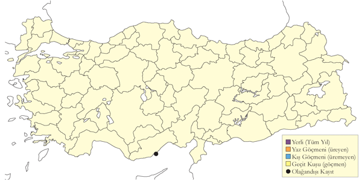

3 Deniz ve Göl Kuşları
Kızıl Gerdanlı Dalgıç
Gavia stellata, Red-throated Loon
[Vinyet: Deniz]
Nispeten yaygın ancak az sayıda kış konuğudur.
Ekim sonu ile haziran başı arasında az sayılarda Orta ve Doğu Karadeniz kıyılarında görülür. İstisnai olarak kalabalık gruplar oluşturur. 20 tanesi 9 Ocak 1969’da Yeşilırmak ağzında ve 24 tanesi 23 Şubat 2008’de Kızılırmak Deltası açıklarında gözlenmiştir.
Üremeyen bireyler ilkbahar sonunda ve yazın, genellikle Karadeniz kıyılarında, daha istisnai olarak iç bölgelerde bulunur. 1 tanesi 14 Haziran 1977’de Van Gölü kıyısında Ahlat’ta1, yaz giysisinden tüyleri kalmış bir birey 16 Temmuz 2003’de Tödürge Gölü’nde (Sivas) gözlenmiştir.
Büyük ihtimal İstanbul çevresinden toplanmış iki tahnit İstanbul’da Saint Joseph Müzesi’nde bulunmaktadır2.

Üreme
Türkiye’de ürememektedir. Üreme dönemindeki yayılış alanı K. Kuzey Amerika ve K. Avrasya’dır.
Alttürler ve Sınıflandırma
Monotipik bir türdür.
Kara Gerdanlı Dalgıç
Gavia arctica, Black-throated Loon
[Vinyet: Deniz]
Karadeniz’de çok sayıda, diğer denizlerde az sayıda bulunan bir kış konuğudur.
Karadeniz ve Marmara kıyılarında eylül başı ile nisan arasında yaygın ve bol bulunan kış konuğudur. Orta ve Doğu Karadeniz’de en yüksek sayılarda görülür. Kışlama döneminin sonuna doğru Karadeniz kıyısındaki kuşların sayıları güneyden gelenlerin toplanmasıyla artar, şubat sonu nisan başı arası zirve yapar. Artvin açıklarında 25-27 Ocak 1967’de 1500, 26 Şubat 2006’da 2100 birey kaydedilmiştir. Yeşilırmak Deltası açıklarında 9-10 Ocak 1969’da saatte 50 bireyin batıya uçtuğu gözlenmiştir. Ege ve Akdeniz kıyılarında oldukça seyrektir, gözlemcilerin yoğun uğradığı Göksu Deltası, Çukurova sulakalanları ve Hatay’da çok nadirdir. Batı ve orta kesimlerdeki içsularda nadiren rastlanır. Bunun dışında 1996’da Ankara Bayındır Barajı, Haziran 1965’te Burdur Gölü, Haziran 2005’te Aygır Gölü ve Akdeniz kıyısında gözlenmiştir.
Üremeyen kuşlar nadiren Orta ve Doğu Karadeniz kıyılarında yaz aylarında gözlenebilir, bazı kuşlarda kur davranışı bile gözlenmiştir. Van Gölü’nde Haziran 1978, Haziran 1983, Temmuz 1987 ve Temmuz 1995’te gözlenmiş, son kayıt suyun sodalı özelliği nedeniyle tüyleri beyazlaşmış bir bireye aittir.

Üreme
Türkiye’de ürememektedir. Üreme dönemindeki yayılış alanı K. Avrasya ve B. Alaska’dır.
Alttürler ve Sınıflandırma
Türkiye’de nominat alttürü bulunur.
Buz Dalgıcı
Gavia immer, Great Northern Loon
[Vinyet: Deniz] [Vinyet: Rastlantısal]
Rastlantısal konuktur.
Dört güncel kaydı bulunur. Yaz giysisinde bir kuş 13 Mayıs 1964’de İstanbul Büyükçekmece açıklarında3, bazıları üreme giysisine girmeye başlamış toplam 8 kuş 29 Nisan 1968’de aynı yerde4, biri 27 Mart 1981’de Tekirdağ Şerefli Deresi ağzında5 ve ölü bir kuş 13 Mayıs 1989’da Göksu Deltası’nda6 bulunmuştur.
İstanbul Robert Kolej’de bulunduğu söylenen tahnit7,81996’daki envanter çalışmasında bulunamamıştır2. Lakin Robert Kolej’deki birçok tahnitin 1992’den sonra zarar gördüğü veya yok olduğu bilinmektedir. Şans eseri Kasparek 1986’daki ziyaretinde bu tahnitin bir fotoğrafını çekmeyi başarmıştır.

Üreme
Türkiye’de ürememektedir. Üreme dönemindeki yayılış alanı K. Kuzey Amerika ve K. Avrasya’dır.
Alttürler ve Sınıflandırma
Monotipik bir türdür.
Boz Yelkovan
Calonectris diomedea, Scopoli’s Shearwater
[Vinyet: Deniz]
Nispeten yaygın ve orta düzeydeki sayılarda bulunan yerli ve yarı göçmen bir türdür.
Krüper zamanından beri birçok araştırmacı Ege ve Akdeniz kıyılarında ürediğini düşünmüştür. Birkaç noktada çok az sayıda üreyebilir.
Mart başından ekim ortasına kadar oldukça yaygın bir yaz konuğudur. Sayıları orta düzeydedir. Eylül sonunda daha kalabalık gruplar oluşturur, Çanakkale Bademli ile Midilli arasında ağustosta bir saatte batıya uçan 65 tane sayılmış, İzmir’in güneyinde eylülde ve Bodrum Yarımadası’nda haziran ve temmuzda 50’lik gruplar görülmüştür. Çanakkale Boğazı’nda 10 Mart 2001’deki 100 kuş sayılmıştır. Marmara Denizi’nde düzensizdir, İstanbul Boğazı’nda sonbaharda iki kez, Rize’de yelkovanlarla beraber bir kez tespit edilmiştir.
Kışın mevcut kayıtların aksine sanıldığından daha boldur. İzmir ve Mersin’den açıklan araştırma teknelerinde bulunan kuş gözlemcisi bilim insanlarınca 100’lercesi gözlenmiştir.

Üreme
EGE. 2013 yılında İzmir Seferihisar açıklarındaki bir adada üredikleri konusunda güçlü kanıtlar toplanmıştır. AKD. Kalkan ve Kaş arasındaki Heybeliada’da 2010 Ağustos ortasında akşamüstü kıyıya yakın gözlenen sürüler, adada bir üreme kolonisi olduğunu düşündürmüştür.
Alttürler ve Sınıflandırma
Monotipik bir türdür. Cabo Verde adalarında üreyen edwardsii ve Azorlar, Madeira[CO1] , Kanarya Adaları ve Portekiz açıklarındaki Berlenga Adaları’nda üreyen borealis taksonları, yakın zamanda tür seviyesine yükseltilmiştir. Bu çalışmadan önce çıkan birçok kaynakta İngilizce ismi Cory’s Shearwater olarak geçmektedir. Bu İngilizce isim artık sadece Kuzey Atlantik kuşları için kullanılmaktadır.
Yelkovan
Puffinus yelkouan, Yelkouan Shearwater
[Vinyet: Deniz] [Vinyet: VU (2016)]
Bütün kıyılarda ve açık denizde yaygın ve çok sayıda bulunan bir yerli türdür. Kışın gelen göçmenlerle sayıları artar.
Karadeniz, Ege ve Akdeniz kıyılarında yıl boyu görülse de sayıları mevsimsel değişiklik gösterir. Kış sonu ve ilkbahar başında Karadeniz ve İstanbul Boğazı’nda on binlercesi bir arada bulunur. İstanbul Boğazı’ndan her gün kalabalık sürülerin geçmesi eskiden beri bir araştırma konusu olmuştur. 18-22 Nisan 1966’da İstanbul Boğazı’nda saatte 6800, Çanakkale Boğazı’nda saatte 8200 kuşun her iki yöne uçtuğu kaydedilmiştir. [CO2] 3 Şubat 2011’de İstanbul Boğazı’nda 4 saatte toplam 55.683 birey , aynı yazarlarca Şubat 2012’te dört saatte toplam 75.000 kuş, ve Şubat 2014’te 90.000 kuş sayılmıştır. Ege’de kışın daha az sayıda olduğu düşünülür9. Akdeniz’de nispeten seyrek aralıklarla rastlanır,[CO3] daha çok mart ve ekim arasında görülür.

Üreme
Ege ve Akdeniz’de kıyıdan uzak adalarda ve kıyıdaki dik yarlarda ürediği varsayılmış, ancak şu ana kadar ispatlanamamıştır. Türkiye dışında denize bakan dik yarlarda koloniler halinde ürer, yuvaları yaklaşık 1 metre derinliğindeki oyuklarda veya kaya yığınlarının arasındaki doğal boşluklarda bulunur. Yuva yatağını döşemek için az ve değişen miktarda bitkisel materyal kullanır. Nisan ve mayıs arasında tek yumurta bırakır.
Alttürler ve Sınıflandırma
Monotipik bir türdür. Yakın zamana kadar Batı Akdeniz’de üreyen allopatrik Balear yelkovanı P. mauretanicus ile aynı tür altında, 30 yıl öncesine kadar Atlantik Yelkovanı’nın P. puffinus bir alttürü olarak değerlendirilmiştir.
Fırtınakırlangıcı
Hydrobates pelagicus, European Storm Petrel
[Vinyet: Deniz]
Ege ve Akdeniz sularında nadir rastlanan bir yaz konuğudur.
Yakın zaman kadar sadece birkaç kaydı olan nadir bir konuk olduğu düşünülmekteydi. 6 Ağustos 2010’da Didim Açıklarında iki kuş fotoğraflanmış10, bunu takiben ağustos ve ekim arasında o sularda düzenli olarak ve Bozcaada ile Kaş arasında az sayıda kaydedilmiştir.
2010 yılı öncesi kayıtları şu şekildedir: 6 tanesi 15 Mart 1972’de İzmir Karaada açıklarında, biri 3 Mart 1972’de Kaş açıklarında, 3 tanesi 29 Nisan 1988’de Kaş’ın 10 km batısında11 ve 7 tanesi 17 Mart 1992’de gene aynı yerde12 tespit edilmiştir. Karadeniz’den kaydı olduğundan bahseder13.

Üreme
Yunanistan’ın Ege Adalarında daha önce iki kez ürediği ispatlanmıştır. Orada muhtemelen düzenli olarak üremektedir (Handrinos ve Akriotis 1997).
Alttürler ve Sınıflandırma
Akdeniz popülasyonu14 tarafından tanımlanan melitensis alttürüne aittir. Bu alttür kanat ölçüleri ve ağırlığı ile nominat alttürden ayrılır.
Küçük Batağan
Tachybaptus ruficollis, Little Grebe
[Vinyet: Sulakalan]
Yaygın ve çok sayıda bulunan yerli[CO4] bir tür, aynı zamanda yarı göçmen ve kış konuğudur.
Bataklık sulakalanlarda nispeten az sayılarda ürer. Üreme sonrası toplanmalara temmuz itibariyle tüm bölgelerde rastlanır. Genellikle 300-500 kuşluk sürüler gözlenirken, Manyas, Erçek ve Van göllerinde 1000’den fazlasının toplanabilir. En yüksek sayı Eylül 2000’de Sarıyar Barajı’nda kaydedilen 2625 kuştur15.
Kışın çoğunlukla batı ve orta kesimlerdeki tatlı su gölleri, bataklıklar, göletler, kıyısal sulakalanlar ve az sayıda denizde görülür. En yüksek sayılarda batı ve güney bölgelerinde, özellikle Bafa Gölü, Büyük Menderes Deltası, Köyceğiz Gölü ve Göksu Deltası’nda rastlanır. Marmara Bölgesi’nde kışın boldur: 1120 tanesi 3 Şubat 1991’de Küçükçekmece Gölü’nde sayılmıştır. Zonguldak Ereğli’de 1970 sonlarında kuşların ekimin ikinci yarısında geldikleri ve mart sonuna kadar kaldıkları gözlenmiştir. İç Anadolu ve Doğu Anadolu’dakiler kışın Ege ve Akdeniz bölgelerine iner ve martta üreme bölgelerine geri dönerler. İç Anadolu ve Göller Bölgesi’nde ılıman geçen kışlarda yüksek sayılarda toplanır. 538 tane 11 Şubat 2005’te Sarıyar Barajı’nda, 1155 tanesi 20 Ocak 2005’te Eğirdir Gölü’nde sayılmıştır.

Üreme
Sık bitkilerle kaplı tatlı ve acı göller, bataklıklar ve aynası olan sazlıklar ve eski nehir yataklarında ürer. Üremesi ve yuvalaması için yeterli bitki örtüsü olduğu sürece çok küçük göletleri bile kullanabilir.[CO5] Genellikle canlı bitkilere tutunan yüzer yuva yapar. Yuva sucul bitkiler öbeğinden oluşur ve ortasında hafif bir çukur vardır. [CO6] Türkiye’de gözlenen yumurta sayısı 4-5 arasındadır. Türkiye dışında yumurta sayısı çoğunlukla 4-6, istisnai olarak 2-7 olur. Gözlenen yavru sayısı dağılımı şu şekilde olmuştur. 2 yuvada 1, 4 yuvada 2, 2 yuvada 3, 2 yuvada 4, 1 yuvada 5 adet. Daha düşük yavru sayıları, kayıplardan kaynaklanır. MAR. En erken yavru 4 Haziran 1996’da İstanbul Belgrad Ormanı’nda görülmüştür. 2 Haziran 2006’da Uluabat Gölü’nde bulunan bir yuvada beş yumurtaya rastlanmıştır. KAR. Kızılırmak Deltası tür için en önemli üreme alanıdır. 1992 yılında üreme popülasyonun 350-500 çift olarak tahmin edilmiş, yer yer seyrek koloniler oluşturduğu ve üreme sıklığının 100 hektarda 25-45 çift olduğu tespit edilmiştir16. 2 tam yetişmiş yavru 10 Haziran 1995’te, 4 yavru 15 Temmuz 1971’de görülmüş17 ve 1992 yılındaki kapsamlı araştırmada ilk yavruya 26 Mayıs’ta rastlanmıştır16). EGE. 5 Mayıs 1995’te Bafa Gölü’nde gözlenen dört yavru yumurtlama tarihinin nisan başı olduğuna işaret eder. AKD. Çukurova’da en erken gözlem, 4 Mayıs 1987’de tespit edilen hav tüyleri bulunan bir yavrudur (Van der Have vd., 1988). 18 Mayıs 1970’te Antalya çevresinde iyice büyümüş yavrular görülmüştür. İÇA. 18 Mayıs 1998’de Uyuz Gölü’nde ve 19 Mayıs 1998’de Eşmekaya’da 4’er yumurtalı yuvalar bulunmuştur. Sultansazlığı’nda karayoluna paralel uzanan kanal boyunca erişkinlerin kuluçkaya yattıkları gözlenmiş, 14 Mayıs 2004’te bir yuvada 5 yumurta görülmüştür 8 Ağustos 1971’de Akşehir Gölü’nde kuluçkada erişkinler gözlenmiştir. Sultansazlığı’nda en erken yavru 7 Haziran 1982’de kaydedilmiştir18 [CO7] . DOA. 19 Haziran 2004’te Erçek Gölü’nde yumurtlama süreci devam eden bir yuvada 2 yumurta bulunmuş, bir başka yuvada ise kabuğun kenarında duran yeni çıkmış iki yavru ve muhtemelen diğer yavruları sırtında taşıyan bir erişkin gözlenmiştir. 18 Ağustos 1972’de Sodalı Göl’de hala kuluçkaya yatan bir erişkin, 25 Haziran’dan itibaren 7 farklı yavru gözlemi olmuştur. Geç tarihli kayıtların ikinci kuluçkayla ilgili olması yüksek ihtimaldir. GDA. 7 Haziran 2006’da Birecik’te yumurtadan yeni çıkmış bir yavru görülmüştür.
Alttürler ve Sınıflandırma
Batı Anadolu’da nominat ruficollis alttürü bulunur. Doğu Anadolu’da capensis [CO8] alttürü olabileceği iddia edilmiştir19. Avrupalı ruficollis ve Afro-Asyalı capensis ve albescens alttürlerinin göz renginin farkıyla rahatlıkla tespit edilebileceğini belirtmiştir20. Dolayısıyla Roselaar’ın varsaydığı alttür, albescens, hatta Irak’ta bulunan iraquensis olabilir. Doğu Anadolu’daki kuşların hangi alttüre ait olduğu kesinleştirilmelidir.
Kızıl Boyunlu Batağan
Podiceps grisegena, Red-necked Grebe
[Vinyet: Sulakalan]
Lokal ve az sayıda bulunan bir yaz konuğu, yaygın ancak nadir bulunan bir geçit türü ve kış konuğudur.
İç Anadolu’da Ereğli Sazlığı veya Sultansazlığı gibi büyük sulakalanlara, Doğu Anadolu’da küçük ve bataklık sulakalanlarda yuvalar ve deniz seviyesinden 2250 metre yükseğe kadar çıkar. Bu tip küçük sulakalanlar nadiren ziyaret edildiği için, gözlem kayıtlarının oluşturduğu izlenimden daha bol olabilir. Üreme alanlarına varışı martın üçüncü haftası olup alanlardan ayrılış ekim sonunu bulur.
Üremeyen bireyler veya üremesi başarısız olanlar yazın küçük topluluklar oluşturabilir. Temmuz 2001 ortasında Sodalı Göl’de 40 tanesi, 9 Haziran 1998’de Eşmekaya Sazlığı’nda 73 kuş (Eken ve Magnin 1999) toplanmıştır.
20. yüzyılın ilk yarısından gelen kayıtlar, eskiden daha yaygın bulunduğuna işaret eder. 1945-46 yıllarında Mogan Gölü’nde yaklaşık 20 çift üremiştir21. Oysa Mogan Gölü’ndeki son üreme 1998 yılında kaydedilmiştir. Son yıllarda sulakalanların kurutulması nedeniyle İç Anadolu’da azalmıştır.
Kışın az sayıda Marmara ve Karadeniz bölgelerinde, nadiren içsularda görülür. 10 tanesi Ocak 1970’de ve 150 tanesi 1-3 Eylül 1980’de Burdur Gölü’nde sayılmıştır.

Üreme
Kenarları sazlık göller, bataklıklar ve göl aynası olan sazlıklarda ürer. Çoğunlukla büyüyen bir bitkiye tutuşturulmuş yüzer yuvası, çürümüş su bitkilerinden oluşur ve ortası çukur olan alçak bir yapıdır. Türkiye’de tek bir yuvada 3 yumurta görülmüş, Türkiye dışında yumurta sayısı 4-5 arasındadır. Gözlenen yavru sayısı bir kere 3 çoğu kayıtta 1 tanedir. AKD. 12 Nisan 1973’de Karamık Gölü’nde kur davranışı gözlenmiştir. İÇA. Çeşitli alanlarda nisan sonu ile mayıs başında kur davranışı gözlenmiştir. 27 Mayıs 1993’de Eşmekaya’da bir yumurtalı bir yuva ve 20 Mayıs 1998’de iki yumurtalı bir yuva görülmüş, yumurtlama sürecinin devam ettiği düşünülmüştür. Aynı alanda 21 Haziran 1998’de gelişmiş bir yavru gözlenmiştir. Ereğli Sazlığı’nda 19 Mayıs 1971’de 3 yumurtalı bir yuva bulunmuştur. 13 Temmuz 1977’de Akşehir Gölü’nde, 17 Temmuz 1986’da Kulu Gölü’nde yavrular kaydedilmiştir. Sultansazlığı’nda 1982 Ağustos sonunda yavrulara rastlanmıştır18. DOA. 29 Mayıs 1969’da Van yakınında ve 1 Haziran 1990’da Çaldıran Gölü’nde yuva yapımına rastlanmıştır. Kars yakınındaki bir alanda 18 Temmuz 1992’de yuva yapımı, 27 Haziran itibariyle toplam 6 yavru kaydedilmiştir.
Alttürler ve Sınıflandırma
Türkiye’de nominat alttürü bulunur.
Bahri
Podiceps cristatus
Great Crested Grebe
[Vinyet: Sulakalan]
Yaygın ve çok sayıda bulunan bir yerli tür ve kış konuğudur.
Özellikle İç Anadolu’nun geniş bataklıklı sulakalanlarında ve Doğu Anadolu’da son derece bol sayıda bulunur. Uluabat Gölü’nde 400 çift, Kızılırmak Deltası’nda 250-300 çift üremektedir. Küçük batağanın kullanabildiği küçük gölet ve bataklıkları tercih etmez, ancak baraj göllerini sıkça kullanır.
Üreme sonrasında ve kışın daha yaygındır ve yüksek sayılarda görülür. Kışlayan bireyler ekim başında gelirler ve nisan sonuna kadar kalırlar. Kıyısal bölgelerde, Kızılırmak ve Yeşilırmak deltaları, Küçükçekmece Gölü, Büyük Menderes Deltası’nda yoğunlaşır, buralarda sert geçen kışlarda binlercesine rastlanabilir. Karadeniz kıyılarında yüksek sayılarda gözlenmiştir. Büyük baraj gölleri önemli sayılar barındırır; Sarıyar’da 5500, Karakaya’da 12.000 ve Keban’da 10.000 tanesi sayılmıştır. Kış Ortası Su Kuşu Sayımları’nda 2005’de sayılan yaklaşık 31.000 kuş en yüksek değerdir.

Üreme
Kıyılarında sazlar olan göllerde ürer. Yuvası sazlara, nilüferlere ve kısmen su altındaki dalların üzerine kurulur, sucul bitkilerden oluşur, ortasında sığ bir çukur vardır. Sığ sularda yuvayı su tabanına oturtur, daha derin yerlerde yüzer yuva bir bitkiye tutturulur. Uluabat Gölü’nde 1998’de üreyen kuşlar, en yoğun olarak yer yer kesintiye uğrayan sazlık şeridinde görülmüş, alandaki sayısız göl aynası ve kanal kuşların beslenme ve dinlenme ihtiyaçlarını karşılamıştır22. Türkiye’de gözlenen yumurta sayısı 4 veya 5’tir. Gözlenen yavru sayısı 1-5 arasındadır. MAR. Uluabat Gölü’nde ortalama yavru sayısı 2,6 (231 yuvada) olarak tespit edilmiştir22. 25 Nisan 2003’de kuluçkaya yatan birçok çift, 19 Haziran 1999’da yetişmiş yavruyla dolaşan çiftler görülmüştür. 13 Mayıs 2007’da yaklaşık 3 haftalık yavrulara rastlanmış, yumurtlamanın mart sonunda gerçekleştiği düşünülmüştür. Yuva yapımı 25 Nisan 1970’de gözlenmiş, 2 Haziran 1967’de biri dört, diğer beş yumurtalı iki yuva bulunmuştur. 23 Nisan 1966’da yumurtlama süreci devam eden 3 yuva tespit edilmiş, 24 Mayıs 1966’da sezonun ilk yavrusu görülmüştür. İznik Gölü’nde 6 Haziran 1966’da çok küçük yavrusu olan dört çift gözlenmiştir. EGE.23 13 Mayıs 1899’da yaklaşık 20 yuva bulmuş ve 21 Mayıs ile 21 Eylül arasındaki geniş dönemde yavru gözlenmiştir. KAR. Kızılırmak Deltası’nda 27 Nisan 1992’de yumurtalı yuvalara bulunmuş, ilk yavrular 20 Mayıs’ta tespit edilmiştir16. AKD. Beyşehir Gölü’nde 1 Mayıs 1967’de yuva yapımı tespit edilmiş, 10 Haziran’dan itibaren yavrular görülmüştür. Göksu Deltası’nda 14 Eylül 1972’de sekiz tane uçamayan iri yavru gözlenmiştir. İÇA. Hotamış Gölü’nde nisan sonundan itibaren kuluçkaya yatmıştır24. Diğer alanlarda en erken yavru 6 Haziran’da gözlenmiştir. DOA. Van Gölü’nde temmuz ortasında kuluçkaya yatan erişkinler ve 8 Haziran 1975’de ilk yavrular tespit edilmiştir. Bu, yumurtlama tarihinin mayıs başı olduğuna işaret eder.
Alttürler ve Sınıflandırma
Türkiye’de nominat alttürü bulunur.
Kulaklı Batağan
Podiceps auritus, Horned Grebe (Slavonian Grebe)
[Vinyet: Sulakalan] [Vinyet: VU (2016)]
Nadir kış konuğudur.
Karadeniz ve Marmara kıyısında eylül sonu ve mayıs başı arasında nadiren rastlanır. 2008’e kadar 21 bilinen kaydı vardır. 2 Ekim 1972’de Küçükçekmece açıklarında görülen 6 kuş en kalabalık gruptur.25tarafından Zonguldak Çatalağzı açıklarında bir kara boyunlu batağanla beraber görülen kuş şubat sonundan 11 Mart 1948’e kadar konaklamıştır.
Karadeniz ve Marmara kıyıları dışında çok nadirdir. Dört tane 29 Ocak 1997’de Balıkesir Ören’de26, birer kuş Şubat 1989’da Göksu Deltası’nda26, 22 Nisan 1999’da Diyarbakır Çınar-Göksu Barajı’nda27, 27 Ocak 2008’de Sarıyar Barajı’nda ve 27 Ocak 2014’de Sapanca Gölü’nde görülmüştür.
Tek bir yaz kaydı vardır: Üreme giysisindeki bir kuş 1 Temmuz 1985’te Çaldıran’da gözlenmiştir.

Üreme
Türkiye’de ürememektedir. Üreme dönemindeki yayılış alanı K. Avrasya, Kanada ve K. ABD’dir.
Alttürler ve Sınıflandırma
Monotipik bir türdür.
Kara Boyunlu Batağan
Podiceps nigricollis, Black-necked Grebe (Eared Grebe)
[Vinyet: Sulakalan]
Lokal ancak çok sayıda olan bir yaz konuğu, yaygın ve çok sayıda olan geçit türü ve kış konuğudur.
Üreme alanlarında nisan ortası ve ağustos arasında bulunur. Koloniler halinde ürer, yüzlerce çift bir arada bulunabilir. İç Anadolu’da oldukça nadirdir. Son zamanlarda, örneğin Kulu Gölü’nde28, sayıları ciddi şekilde azalmıştır. Doğu Anadolu’da 2500 m rakıma kadar genellikle küçük, ötrofik ve bataklık sulakalanlarda ürer. Kars Kuyucuk Gölü’nde 330 çift bulunur. Üremede başarısız olanlar temmuzda gözde sulakalanlarda toplanır. Bunlara sonraki 2 ay boyunca üremeyi bitiren bireyler ve ülke dışından gelenler katılır. Bu topluluklar birkaç bini bulabilir. Örneğin Acıgöl’de 1800, Kulu Gölü’nde 2000, Erçek Gölü’nde 9 Eylül 2000’de 10.000 kuş (Birding World 1998) ve Sodalı Göl’de 4000-5000 kuş kaydedilmiştir. Doğu Anadolu’da bu tüy döküm alanlarında aralık başına kadar kalabilir.
Önemli sayılarda kışlar. Karadeniz ve Marmara kıyılarında lokal olarak korunaklı koylar ve limanlarda düzenli olarak ekim ortası ile nisan ortası arasında görülür (Albrecht 1986). Kışlama bölgelerinde mayıs başına kadar kalabilir. Yüksek sayılarda Göller Bölgesi’nde bulunabilir. Burdur Gölü’nde düzenli olarak 5000 tanesi, Ocak 1970’de 18.662 tanesi sayılmıştır. İç Anadolu’da az sayıda kışlar. Son yıllarda Kış Ortası Su Kuşu Sayımlarında ülke toplamı 2000 kuşun altına inmiştir.

Üreme
Sazlıkların ve sualtı bitkilerinin bulunduğu sığ tatlı veya acı göllerde yuvalar. Genellikle küçük koloniler oluşturur, ara sıra tek başına da ürer. Yüzer yuvası bir sucul bitkiye iliştirilir. Sucul bitkilerden oluşan alçak bir öbektir ve ortasında sığ bir çukur bulunur. Türkiye’de gözlenen yumurta sayısı 1-6 arasındadır ve yumurta sayısının dağılımı, 16 yuvada 1, 11 yuvada 2, 8 yuvada 3, 5 yuvada 4 1 yuvada 5 ve 1 yuvada 6 adet olmuştur. MAR. Uluabat Gölü’nde 20 Haziran 1999’da 1-2 haftalık yavrularını gezdiren birkaç çift, yumurtlama tarihinin 21 Mayıs civarında olduğunu gösterir. KAR. Kızılırmak Deltası’nda Mayıs 1992’de kur davranışı tespit edilmiş, 11 Mayıs’ta muhtemel bir yuvadan kalkan bir kuş, düşmanı alandan uzağa sürme davranışı göstermiştir16. AKD. Çukurova sulakalanlarında 14 Nisan 1987’de kur davranışı (van der Have vd. 1988), Karamık Gölü’nde 18 Temmuz 1972’de yavrusu olan iki çift, 29 Temmuz 1972’de Seyhan Barajı’nda üç yavrulu bir erişkin gözlenmiştir. İÇA. Kulu Gölü’nde 13-15 Temmuz 1971’de bulunan koloni yüzen su bitkilerinin (Ruppia spec., Scirpus spec. ve Phragmites communis) oluşturduğu küçük bir adanın kenarında yer almıştır. Toplam 120 yuva bulunmuş, sadece 42 yuvada yumurtaya rastlanmış, kalanında yumurtadan çıkmış yavruların yuvayı terkettiği düşünülmüştür. 22 Temmuz 1971’de Kulu Gölü’nde bulunan 13 yuvada yumurta sayısı 2 yuvada 1, 4 yuvada 2, 5 yuvada 3, 2 yuvada 4 adet olmuştur. Bir yanda yüzen yavrular, diğer yanda yuva yapan erişkinler gözlenmiştir (Kasparek 1987a). Mogan Gölü’nde nisan başından itibaren yaz konuğudur, nisan ortasında çiftleşmiş ve kur yapanlar gözlenmiştir (Wadley 1951). Hotamış Gölü’ndeki iki koloni toplam 20-25 çift kuştan oluşmuştur (Kirwan 1993a). Çöl ve Uyuz Göllerinde 5 çiftin kur yaptıkları 1 Haziran 1991’da gözlenmiş, 5 Temmuz 1991’de iki yavrulu bir çift görülmüştür. Bunun dışındaki 3 yavru kaydının en erken 31 Temmuz’dadır. DOA. Kuyucuk Gölü’nde 18 Temmuz 1992’de 196 yuva sayılmış, 2000’li yıllarda 330 çift üremiştir. Diğer alanlarda en erkeni 19 Temmuz olan toplam 3 yavru kaydedilmiştir.
Alttürler ve Sınıflandırma
Türkiye’de nominat alttürü bulunur.
Flamingo
Phoenicopterus roseus, Greater Flamingo
[Vinyet: Sulakalan]
Lokal ancak çok yüksek sayıda üreyen yerli ve yarı göçmen bir türdür. Ayrıca yaygın ve çok sayıda bulunan bir geçit türü ve kış konuğudur.
Tuz Gölü ve Gediz Deltası türün yuvaladığı iki ana alandır.
Tuz Gölü onlarca yıl yaklaşık 10.000-20.000 çifti barındırarak en önemli üreme alanı olmuştur. 1969’da ilk kez İç Anadolu’da ürediğinden şüphelenmiş ve Tuz Gölü’nde araştırmalar başlamış, gölün ortasındaki küçük bir adada yumurta kabukları bulunmuştur. Mayıs 1969’da 14.000 birey tespit edilmiş ve 1500-2000 kuşun ürediği kanısına varılmıştır. 1970’de 5000 çiftin ürediği bir koloni bulunmuş, 1971’de su seviyesinin yüksek olması nedeniyle sadece 83 yuva sayılmış, 1972’de 3500 çift, 1973’te 3700 çift, 1974’de yaklaşık 1000 yavru ve yavrularla ilgilenen 2000 erişkin ve 1978’de yaklaşık 5000 çift kaydedilmiştir. Araştırmalara 1978-1991 yılları arasında devam edilmemiştir. 1991 ile 2003 yılına kadar belirli aralıklarla, 2003 yılından sonra her yıl düzenli hava uçuşları yapılarak kuşlar sayılmıştır. 1991 yılında havadan yapılan gözlemde yeni bir yuvalama alnı tespit edilmiş, toplam 11.000 yuva ve 4100 yavru sayılmıştır. 1992’de yapılan benzer bir çalışmada 14.000 yavru kaydedilmiştir29. Devamında yapılan sayımlarda 1997’de 4000, 1998’de 11.400, 1999’da 1200, 2000’de 8000-10.000, 2002’de 4750, 2003’de 3059 ve 2004’de 7312 yavru sayılmıştır. 2005 yılında 11.499 çift ve 3309 yavru, 2006 yılında 13.302 yavru, 2007 yılında 4382 yavru sayılmıştır. Aynı yıl yaşanan kuraklık sonucunda yüzlerce flamingo yavrusunun henüz palazlanmadan öldüğü belirlenmiştir. 2008 yılında 1610 yavru, 2009 yılında 14.644 yavru, 2010 yılında 5070 yavru sayılmıştır. 2011 ve 2013 yılları arasında Tuz Gölü’nde Akdeniz ve Batı Afrika’da bugüne kadar gözlenmiş en yüksek sayıya ulaşılmış, sırasıyla 18.418, 20.274 ve 20.292 yavru sayılmıştır. 2014 yılında yavru sayısı 2893’e gerilemiştir. Bunun 2007’dekine benzer şekilde yaşanan kuraklık nedeniyle olduğu düşünülmektedir.
Gediz Deltası’nda Çamaltı Tuzlasında ilk 1982’de 100-150 çift üremeye başlamış, 1987 yılına kadar üreme denemeleri devam etmiş, ancak üreme başarısı çok düşük olmuştur. 1987-1991 arasında 100-200 çift düzenli olarak üremiş ve üreme başarısı artmıştır. Sonraki yıllar sayıları artmaya başlamış, 1995’te toplam 1752 çift yuvalamıştır30,31. 2000’li yıllarında gerçekleştirilen koruma çalışmalarının sonucunda flamingo kolonisi hızlı bir artış göstermiştir; 2003’te 3100 yavru, 2004’te 3000-3500 yavru, 2005’de 4025 yavru, 2006’da 7140 yavru yetişmiştir (Sıkı 2002, Onmuş ve Sıkı 2011). Üredikleri adaların erozyona uğramaları nedeniyle koloni küçülmeye başlamış, 2007’de 3000-4000 yavru, 2008’de 3200 yavru, 2009’da 3000-3500 yavru, 2010’daysa 2071 yavru sayılmıştır (Onmuş ve Sıkı 2011). 2011 yılında 2500-3000 çiftin üremesi koloniye giren köpekler nedeniyle başarısızla sonlanmıştır. Aynı yıl deltada ilk kez Homa Lagününde başarılı bir şekilde yaklaşık 1000 yavru. 2012 yılında Çamaltı Tuzlası’nda üredikleri adanın kıyı erozyonuyla yokolması karşısında bir proje geliştirilmiş, 6.400 m2 büyüklüğünde bir üreme adası inşaat edilmiştir. Flamingolar 2012 ve 2013 yıllarında bu üreme adasını kullanmamış, Homa Dalyanı’ndakiler üremeye devam etmişlerdir, 2012 yılında burada 1600 yavru sayılmış, 2013 yılında 3000 çift üremeye başlamış, fırtınalar nedeniyle yalnızca 130-140 yavru hayatta kalmıştır. 2014 yılında kurulan üreme adası ilk kez başarıyla kullanılmış, deltada bugüne kadar en büyük koloni oluşmuş; 10.812 çift ve 7000 yavru sayılmıştır.
1969’dan beri toplam 9 alandan üreme kaydı gelmiştir. Acıgöl’de 1964 ve 1968’de üremiştir32, 1993’te azami 100 çiftlik bir koloni bulunmuş, 2006’da ise 100 yavru flamingo gözlenmiştir. Akşehir Gölü 2008 yılında ilk kez tamamen kuruduğunda buradaki koloniye ulaşılmış ve 100 ölü yavru flamingo tespit edilmiştir. 2013’de 2950-3200 çift kolonide gözlenmiş, ancak üreme sezonunun ilerleyen döneminde koloninin dağıldığı tespit edilmiştir. 1960’larda az sayılarda Ceyhan Deltası’nda (muhtemelen Yumurtalık Lagünleri) ürediği düşünülmüş3. Akyatan Gölü’nde 2009 yılında 163 yuvadan oluşan bir üreme adası tespit edilmiş, ancak koloninin yavru çıkarıp çıkarmadığı tespit edilememiştir. Sultansazlığı’nda Yay Gölü’nde 1970’te 1500-2000 çiftin ürediği bulunmuş33, Haziran 1974’de 8000 kuş sayılmış ve 200 çiftin yuva kurduğu gözlenmiştir. Geçmişte Türkiye üreme popülasyonunun çok önemli kısmı Sultansazlığı’nda toplanmaktaydı. Alana ortalama 20.000-30.000 sayılmış, istisnai olarak Ekim 1980’de 60.000-80.000 tespit edilmiştir. Seyfe Gölü’nde iki küçük yuvada 1970’de aktif yuvalar görülmüş34, 1992’de ise 1947 yuva sayılmış (Yarar, M. ve Özesmi, U.), Mayıs 1993’te birkaç yüz yuva tespit edilmiş, ardından 1994 yazında 240 yavru görülmüştür. Karapınar Ovası’nda 1976 ve 1977’de 500 çiftlik kolonin olduğu düşünülmüş (Kılıç 1988, Kirwan 1992d), ancak başarılı bir hiçbir zaman teyit edilmemiştir. Ereğli Sazlığı’nda 1987’de 35-40 tane büyük olasılıkla önceki yıl da kullanılmış yuva bulunmuş, ardından 1991’de 217 yuva sayılmış, bunların 68’inde yumurta görülmüş, ancak yapılan bir hava uçuşunda koloninin terk edildiği gözlenmiştir. 1993’te ise 300 üreyen çift ve birçok yavru görülmüş, en son 1991 yılında en fazla 20 çiftin ürediği gözlenmiştir. Ereğli Sazlığı’nın 80 ve 90’lı yıllarda flamingoların üremesi için cazip hale gelmesi, kuruma sürecinde tuzluluğun artmasından kaynaklanmış olabilir. Bu türün üreme alanlarını düzensiz olarak mesken etmesi, biyolojisinde son derece iyi bilinin bir özelliktir. Üreme alanlarına ulaşımının zor olması nedeniyle gözlemci aktivitesi ve dolayısıyla veri akışı çok düzensizdir.
Erçek Gölü’nde yaz sonu ve sonbahar başında çoğunlukla erişkinlerden oluşan ve sayıları binleri bulan topluluklar bulunur. Erçek Gölü, Sodalı Gölü ve diğer Van Gölü havzasındaki sulakalanlarda görülen kuşlar muhtemel İran Urumiye Gölü’nden gelirler. İran’da üreyen kolonilerde halkalanan yavru bireyler Türkiye’de en azından 22 kez gözlenmişlerdir35,36.
Kış aylarında eylül sonu ile nisan başı arasında Marmara, Ege, Akdeniz sulakalanlarda oldukça yaygın ve yüksek sayıda bulunur. Büyük çoğunluğu Gediz Deltası, Büyük Menderes Deltası, Seyhan ve Ceyhan Deltaları’nda toplanır. Kış Ortası Su Kuşu Sayımlarında 1972’de toplam 25.900 kuş tespit edilmiş, bunun 19.000 tanesi Akyatan Gölü’nde sayılmıştır. 1999’da toplam 51.755 kuş sayılmış, bunların 18.930’u Akyatan Gölü, 14.889’u Büyük Menderes Deltası ve 15.413’ü Gediz Deltası’na dağılmıştır37. 2002’de Ege’de Büyük Menderes ve Gediz deltalarında toplam 29.000 kuş sayılmıştır38. Flamingoların kışlama popülasyonu 2014’ye kadar bir artış göstermiş, ortalama popülasyon büyüklüğü 55.000±20.000 kuş olarak hesaplanmıştır. Bazı kuşlar ılıman kışlarda İç ve Doğu Anadolu’daki sulakalanlarda kalabilir. Ocak 1969’da Tuz Gölü’nde 1700, Sultansazlığı’nda 2000 tanesi sayılmıştır.
Türkiye’de üreyen kuşların çoğunun ülke sınırlarında kaldığı, kışın göç almak suretiyle sayılarının arttığı düşünülmekteydi. Bu büyük oranda doğru kabul edilse de, Türkiye’de üreyen kuşların bir kısmı da dışarıya gitmektedir. 2003-2009 arasında Gediz Deltası’nda yavru olarak halkalanan flamingolar Batı Akdeniz, Kuzey Afrika, Doğu Akdeniz ve Arap Yarımadası’nda toplam 16 farklı ülkede tespit edilmiştir. Bu kuşların bir kısmı Gediz Deltası dışında Fransa, İtalya ve Cezayir’deki kolonilerde başarıyla üremiştir. Benzer şekilde Fransa, İspanya ve İtalya’da dünyaya gelen flamingolar Türkiye’ye yıl boyunca gözlenmiş, Gediz Deltası’nda başarılı şekilde üremiştir35,39.

Üreme
Tuzlu veya aşırı tuzlu sığ göllerde koloniler halinde yuvalar. Yuva alanları deniz seviyesinden 1100 m rakıma kadar çıkar. Türkiye’deki kolonilerdeki kuş sayısı 100 ile 23.000 arasında değişmektedir. Koloni sığ suda, alçak bir adaya veya kurumuş bir çamur düzlüğüne kurulur. Yuva çamurdan yapılmış, genellikle 25-40 cm, nadiren 10 cm yüksekliğinde kesik bir konidir, ters çevrilmiş bir saksıya benzer, zamanla kurur ve son derece sert bir hal alır. Yuvanın ortası çukurdur, zeminine tüyler eklenebilir. Tek bir yumurta koyar, yumurtlama dönemi nisan başı ile haziran ortası arasındadır. Yumurtlama tarihi alandaki su seviyesiyle ilişkili olabilir. Kuşlar üreme dönemi çok hassas olup rahatsızlık nedeniyle tüm koloniyi terk edebilirler. Yuvayı terkeden kuşlar o yıl başka bir alan veya bölgede tekrar yuva kurmaz ve yumurta koymaz. EGE. Gediz Deltası’ndaki tuzlalarda 1995’te 1450 çift üremiş, koloninin oluşması 15 Mart’ta başlamış, ancak koloni Mayıs sonunda terkedilmiştir40. İÇA. En düzenli ürediği ve büyük koloninin bulunduğu Tuz Gölü son derece zor ulaşılan, aşırı tuzlu ve yazın tamamına yakını kuruyan bir göldür. Burada 31 Mart 1969’da kur ve çiftleşme davranışı gözlenmiştir33. 18 Mayıs 1970’de bulunan 5000 yuva sudan 25-30 cm yüksekliğe kurulmuş, yuvaların yüzde 70’i yumurtalı, 20’si azami 10 günlük yavrulu, 10’u ise boş halde bulunmuştur. Bu gözlem üremenin nisan başına başladığına işaret eder33. 24 Mayıs 1972’de hemen hemen her yuvada bir haftalık yavrular gözlenmiştir. 15 Haziran 1973’te tümü 1-3 haftalık olan yavrular gözlenmiştir. Bu, yumurtlamanın nisan ortasında başladığa işaret eder. 11 Haziran 1974’de tespit edilen 30-40 günlük yavrular41 yumurtlama dönemininin nisan başı olduğunu gösterir. 6 Temmuz 1992’de gözlenen 1000-2000 yavrunun yaklaşık 4 haftalık olduğu, yumurtlama başlangıcının nisan başı olduğu tahmin edilmiştir. 6 Haziran 1992’de havadan yapılan bir sayımda gölün güneyindeki adalarda koloninin yeri tespit edilmiş, yürüyen yavrulardan oluşan flamingo kreşinin koloniden 2-5 kilometre uzakta bulunduğu gözlenmiştir31. Sığ ve acı bir göl olan Seyfe Gölü’nde 18-22 Haziran 1992 en büyüğü 15 günlük yavrular görülmüş, bu gözlem yumurtlamanın mayıs başı olduğuna işaret etmiştir. 1993’te 13 Mayıs’taki ziyarette kolonideki yuvaların hepsinin eski olduğu, 14 Haziran’da ise 200-500 yeni yuvanın yapılmış olduğu, yuvaların bazılarının sudan 40 cm yukarıda olduğu, çoğunda çamurun henüz kurumadığı, ancak sadece yaklaşık 20 tanesinde yumurta olduğu ve üremenin henüz yeni başladığı tespit edilmiş, aynı yıl 70-80 flamingo yuvası üzerine bir ak pelikan kolonisinin yerleştiği gözlenmiştir. Ereğli Sazlığı’nda 10 Mayıs 1987’de önceki yıla ait olduğu düşünülen 35-40 yuva bulunmuş, alanda suyun tatlı olduğu bir mevkide 1 Haziran 1991’de üç küçük adada 1100 erişkin ve 227 yuva sayılmış, yuvaların sadece 68 tanesinde yumurta görülmüştür42. 16-17 Haziran 1993’te dört adada toplam 300 çiftin ürediği tespit edilmiş, yapılan sayımda yuvaların 17’si boş, 54’ü yumurtalı, 33’ü en büyüğü bir haftalık yavrulu olduğu tespit edilmiş29, yumurtlamanın en erken 10 Mayıs’ta başladığına karar verilmiştir. Sultansazlığı’nda 8-10 Haziran 1974’de 200 çiftin yuvalamaya henüz başladığı gözlenmiştir41.
Alttürler ve Sınıflandırma
Monotipik bir türdür.
Küçük Flamingo
Phoeniconaias minor, Lesser Flamingo
[Vinyet: Sulakalan] [Vinyet: Rastlantısal]
Rastlantısal konuktur.
10-16 Nisan 2006’da Ereğli Sazlığı’nda bir flamingo grubunun içinde tespit edilen kuş ilk kaydı oluşturmaktadır. Benzer tarihlerde İsrail’de de kaydedilmesi, bu kuşun yabani olduğu iddiasını desteklemiştir. Bunun ardından 30 Ocak - 30 Nisan 2009’da Gediz Deltası’nda, 3 Haziran 2009’da Kulu Gölü’nde, 22 Nisan 2011’de Kulu Gölü’nde, 21 Ocak 2012’de Enez Lagünleri’nde, 15 Nisan ve 18 Haziran ve sonrasında 24 Ekim - 2 Kasım 2012 arasında Kulu Gölü’nde ve 26 Nisan ve 11 Mayıs 2014’de ve ardından 2015’te gene Kulu Gölü’nde görülmüştür.
İspanya ve Fransa’da yabani olduğu düşünülen kuşlar defalarca gözlenmiş, Güneybatı Moritanya’da en az bir kez üremiştir. Avrupa’daki kayıtların bazılarını doğal yaşam parklarından kaçan kuşlar oluşturur.
Üreme
Türkiye’de ürememektedir. Yayılış alanı Sahra altı Afrika’dır.
Alttürler ve Sınıflandırma
Monotipik bir türdür. Bu tür bazen Phoenicopterus cinsi altına yerleştirilir.
[CO1]Burası dahil değildi düzeltilenlere ama geçerken gözüme çarptı. Yer isimlerini orijinal dillerindeki gibi yazmayı tercih ediyoruz. Yani Madeira şeklinde.
[CO2]Bu 1966 tarihindeki gözlenen kuş sayısı mı, yoksa genel bir bilgi mi? Her durumda cümleyi elden geçirmek gerekiyor. İstanbul Boğazı iki kere geçiyor.
[CO3]?? Eğer bu kuşçular arasında oturmuş bir jargon değilse, cümleyi daha anlaşılacak şekilde yazmak gerekir. “Akdeniz’de nispeten düzensiz gözlenir” gibi, ama bu haliyle de çok içime sinmedi.
[CO4]??
[CO5]Bu paragrafı üremeye almak daha iyi olur.
[CO6]??
“En eski tarihlisi 7 Haziran 1982’de Sultansazlığı’nda olmak üzere toplam 4 yavru kaydı bulunmaktadır (Kasparek, 1985)” mı yoksa yavruya yılın en erken hangi tarihinde rastlandığı mı söylenmek isteniyor? Eğer öyleyse cümleyi daha iyi anlaşılacak şekilde yeniden düzenlemek gerekir.
[CO8]“taksomu” eklenebilir mi buraya?
Sarı Gagalı Leylek
Mycteria ibis, Yellow-billed Stork
[Vinyet: Rastlantısal]
Rastlantısal konuktur.
2016’e kadar 3 kere görülmüş bir Afrika göçmenidir. 7-20 Mayıs 1962’de Amik Gölü’nde43, 28 Mayıs 1986’da Göksu Deltası’nda44 ve 18-24 Haziran 2012’de Mogan Gölü’nde birer genç gözlenmiştir.
1996’dan önce İsrail’de 18 kaydı vardır45. Abu Simbel, Nasser Gölü ve güney Mısır’da düzenli kış ziyaretçisidir46. Bir genç Ağustos-Eylül 1995’te Sharm el Sheikh’de fotoğraflanmıştır (Birding World 8: 292, 335). Haziran-Temmuz 2002’de Bulgaristan’da47 görülmüştür.

Üreme
Türkiye’de ürememektedir. Yayılış alanı Sahra altı Afrika’dır.
Alttürler ve Sınıflandırma
Monotipik bir türdür.
Kara Leylek**
Ciconia nigra
Black Stork
Yaygın bulunan ancak sayıları orta düzeyde kalan bir yaz konuğu, yaygın ve çok rastlanan bir geçit türü, lokal ve az sayıda olan bir kış konuğudur.
Ormanlık veya tepelik arazide lokal olarak bulunan bir yaz konuğudur. İki farklı habitatta ürer. Birincisi su varlığı açısından zengin, akarsu, göl veya sulakalanların yakınındaki ormanlık arazilerdir. İkincisi kurak bölgelerde akarsu boylarındaki dik kayalık yarlardır. Kocaçay Deltası ve Kızılırmak Deltası gibi alanlarda yüksek yoğunlukta üreyebilir. Kızılırmak Deltası’nda 50’den fazla çift bulunur. Bilinen üreme alanlarının dışında temmuz ortası görülmeye başlar.
İlkbahar göçü mart ortasından haziran başına kadar sürer. Göç sırasında batı ve orta bölgelerde daha sık rastlanır. İstanbul Boğazı’nda Sarıyer tepelerindeki tek noktadan mart ortası ve mayıs sonu arasında 2006’da 1118, 2010’da 1197, 2011 yılında 1246 kuş sayılmıştır (Üner et al 2007, İKGT 2010 ve 2011).
Sonbahar göçü ağustosun başından kasım başına kadar sürer, eylül başından ekim başına kadar yoğundur. İstanbul Boğazı’nda 1973’te tek noktadan yapılan sonbahar sayımında toplam 8318 kuş sayılmıştır, aynı dönem en yüksek günlük toplam, 18 Eylül 1978’de sayılan 5333 kuş olmuştur. Son yıllarda bir günde tek noktadan sayılan en yüksek değer 20 Eylül 1995’te 2588 kuş olmuştur. 2008 yılında 22 Eylül ile 10 Ekim arasında 6 noktadan yapılan kapsamlı çalışmada toplam 16.647 kuş sayılmış, bugüne kadar bilinen sayıyı ikiye katlamıştır. Ekim başında Çukurova’da da görülür. Borçka’da ise nadirdir.
Kızılırmak Deltası, Gediz Deltası ve Çukurova sulakalanlarında ortalama 20 kuşluk küçük gruplar halinde kışlar9,48–50.

Üreme
Ormanlık bölgelerde ağaçlarda, kurak bölgelerde kayalık yarlarda yuvalar. Hem yaprak döken hem ibreli yaşlı ağaçları kullanır, yuvası yerden 2,5-6,0 m yüksektir. Yuva dal ve sopalardan yapılmış sığ çanak şekilli ve dikkat çeken bir yapıdır. Çerçevesi yosun ve çimenlerle kaplanır. Yeni yuvalar biraz küçük olabilir, yıllanan yuvalar gittikçe büyür. Türkiye’de 29 yuvada gözlenen yumurta sayısı 3 veya 4 olmuştur. Yavru sayısı 2-4 arasında, toplam 10 yuvada ortalama 2,9 olmuştur. Bu istatistikler değerlendirilirken, yerden yapılan gözlemlerde daha çok büyük yavruların görülebilmesi, döllenmemiş yumurta veya ölmüş yavruların çoğunlukla görülmemesi hesaba katılmalıdır. KAR. 13 Temmuz 1972’da Kızılırmak Deltası’nda iki yavru gözlenmiş, 23 Temmuz’da yapılan izlemede kuşların yuvadan uçmuş olduğu düşünülmüş17, yumurtalama tarihinin nisanın üçüncü haftası olduğu tahmin edilmiştir. 1992’de 17 Mart’tan itibaren iskan edilmiş yuvalar, Nisan sonunda ilk yumurtalar ve 26 Mayıs’tan itibaren yavrular ve genç kuşlar görülmüş, toplam üreyen popülasyonun 30-35 çift olduğu saptanmıştır16. İÇA. Ürgüp’te 22 Nisan 1971’de yuvada yumurtalar tespit edilmiş, 3 Haziran’da yuvada üç yavru gözlenmiştir. Kızılcahamam’da üç yumurtalı bir yuva bulunmuş, ilk yumurtanın 6 Mayıs 1993’te koyulduğu tahmin edilmiştir. 29 Nisan 2007’de Aksaray’da içinde yumurta ve küçük bir yavru olan iki yuva bulunmuş, yumurtlamanın mart sonunda başladığı düşünülmüştür.
Alttürler ve Sınıflandırma
Monotipik bir türdür.
Leylek
Ciconia ciconia
White Stork
Yaygın ve çok bulunan bir yaz konuğu ve geçit türüdür.
Yaygın ve bilinen bir yaz göçmenidir. En azından 2200 m rakıma kadar üreyebilir. Mevcut üreyen popülasyon 7000 ile 30.000 çift arasında51, 15.000 ile 35.000 çift52arasındadır. 1993 baharında İç Anadolu’da geniş bir sahadaki popülasyonun 1000 ile 3000 arasında tahmin etmişlerdir53. üreme popülasyonunu 1960’ların sonlarından itibaren %60 azaldığını iddia etmiştir54. Diğer yandan üç kıyı alanında popülasyonun sabit kaldığı, hatta bazılarında artmış olabileceğini düşünmüştür55.
Leyleğin doğu nüfusunun büyük çoğunluğu Türkiye üzerinden göç eder. İlkbahar ve sonbahar göçü, İstanbul Boğazı – Bursa – Eskişehir – Akşehir Gölü – Konya – Ereğli – Pozantı - Adana hattındaki dar bir koridorda gerçekleşir. Kuşlar zaman zaman hattın batısına kayabilir, Göksu Deltası’nda 25.000 kuşluk sürüler görülebilmektedir.
İlkbahar göçünde Akdeniz Bölgesi’nde şubat sonunda görülmeye başlar, göç martın ikinci yarısı yoğundur, mayıs sonuna kadar devam eder. Doğu Anadolu’da nisan başına kadar görülmez. 15 Mart ile 31 Mayıs 2010 arasında İstanbul Boğazı’nda tek istasyondan toplam 105.204 kuş sayılmıştır (İKGT 2010). Muhtemelen üremeyen gençlerin geçişleri haziran ortasına kadar devam eder.
Temmuz ortasında üreme sonrası toplanmalar görülür. Dönüş göçü temmuz sonunda başlar, ağustos ortasından itibaren kuvvetlenir ve eylül başına kadar devam eder. Ekim sonu ve hatta kasıma kadar küçük göçmen sürülere rastlanır. İstanbul Boğazı’ndaki yoğun günler genellikle 13 ile 31 Ağustos arasındadır. 1972’de toplam 338.353 kuş sayılmış, günlük en yüksek değer 29 Ağustos sayılan 52.954 kuş olmuştur. Dört ayrı günde toplam 35.000’den fazla kuş sayılmıştır. Borçka-Hopa bölgesinde az sayıda geçer, 21 Mart-14 Mayıs 1994’te Hopa’da sadece 50 kuş sayılmıştır. Amik Gölü’ndeki gözlemlerinde yüksek sayılarda kaydedilmiştir56. Belen Geçidi’nde 1976 sonbaharında 103.576 kuş kaydedilmiş57, bu çalışmada geçiş koridorunun çok daha geniş olduğu ve Akıntı Burnu’ndan Dörtyol’a kadar uzandığı düşünülmüş, daha güncel gözlemlerde bu teyit edilmiştir.
Az sayıda ılıman bölgelerde kışlayabilir.

Üreme
Çoğunlukla küçük ve orta boylu yerleşimlerde, ara sıra da yerleşim yakındaki ağaçlıklar veya terkedilmiş çiftlik ve binalarda yuvalar. Yuvası çatı, baca, telefon direği veya elektrik direğine kurulur. Yuvalaması için yerleştirilen platformları kullanır. En sık yuvaladığı ağaçlar kavak, söğüt, çam, zeytin ve ardıçdır. Balıkçıl kolonilerinde yuvaladığı da gözlenmiştir. Yuva dal ve sopalardan yapılmış, çim ve toprak sıvamış, çukuru çöp, tüy ve çim ile kaplanmış sığ bir çukurdur. Uzun yıllar kullanılmakta olan yuvalar çok büyük olabilir. Yuvaların alt kısmına serçe ve söğüt serçesi yerleşebilir, tek bir leylek yuvasının içinde 50’ye yakın serçe yuvası sayılabilir. Türün üreme biyolojisi Batı ve İç Anadolu’da iki alan ayrıntılı olarak çalışılmıştır (Göcek vd. 2010). Türkiye’de tek bir yuvada gözlenen yumurta sayısı 5’dir. Gözlenen yavru sayısı 5 gözlemde 2, 7 gözlemde 3, 4 gözlemde 4, bir gözlemde 5 adet olmuştur. MAR. Marmara ve Ege’deki bir çalışmada sayılan yaklaşık 170 yuvanın çoğu köylerin içinde bulunmuştur. Uluabat Gölü’nde 25 Nisan 2003’te kuluçkada gözlenmiş, büyümüş yavrular temmuz sonunda görülmüştür. KAR. Kızılırmak Deltası’nda 26 Temmuz 1971’de 22 yuvada 55 yavru sayılmıştır. 1975 yılında 3 Mayıs’ta kuluçkadaki ilk erişkin, 7 Haziran’da ilk yavru gözlenmiştir. 1992’de yuvaların bir kısmı evlere yakın ağaçlara, bir kısmı dağınık koloniler halinde korulara dağılmıştır. İlk yavrular 21 Mayıs’ta görülmüşler16, yumurtlama tarihinin 20 Nisan olduğu hesaplanmıştır. Toplam popülasyon 125-130 çift olarak tahmin edilmiştir16. Daha sonra yapılan kapsamlı araştırmada Bafra Ovası’ndaki popülasyonun en azından 900 çiftten oluştuğu belirlenmiştir. 12 Haziran 2004’te İspir yakınlarında elektrik direklerindeki yuvalarında yaklaşık 3-4 haftalık yavrular görülmüş, yumurtlama tarihinin 15 ve 22 Nisan arasında olduğu düşünülmüştür. EGE. Milet’te (Aydın) 19 Mayıs 1970’de 30 yuvanın çoğunda küçük yavru gözlenmiş, yumurtlama tarihinin nisan ortası olduğu hesaplanmıştır. Söke yakınlarında bir köyde 13 Mayıs 1899’da23 50’den fazla yuvanın çoğunda henüz çatlamamış yumurtalar, kalanında küçük yavrular gözlenmiş, 21 Nisan’dan sonra kuluçkaya yattıkları kaydedilmiş, yumurtlamanın 11 Nisan’da başladığı tahmin edilmiştir. AKD. 27 Mart 2000’de Ceyhan’da kuluçkaya yatan erişkinler tespit edilmiştir. 7 Mayıs 1987’de Çukurova’daki yuvanın çoğunda kuşların kuluçkada olduğu görülmüş, haziran sonu ve temmuz başında iri yavrulara rastlamıştır. 1998’de Beyşehir Gölü, Yeşildağ köyünde en az 21 tane yuva yapan çift görülmüş, Dalyan yakınında koloni halinde çam ağaçlarında yuva yapan 10-19 çift sayılmıştır58. İÇA. Çayır veya bataklıklara yakın yerleşim yerlerini tercih eder53. 1983-84’te Kızılcahamam’da kayalık bir yarda59, 1992’de Amasya ve Osmancık arasında bir kayada yuvaladığı kaydedilmiştir. Erişkinler 15 Mart ile 4 Ağustos arasında yuvada rastlanmışlardır. Çoğu kayıt erişkinlerin nisan sonu ve mayısta kuluçkaya yattıklarını göstermektedir. 1993’te bölgede yapılan kapsamlı araştırmada çoğu köyde sadece bir çift, bazılarında birkaç çift, Eşmekaya’da ise 12 çift tespit edilmiştir53. 14 Mayıs 2004’te bir erişkin küçük yavrusunu beslerken görülmüş, yumurtlamanın nisan ortasında olduğu tahmin edilmiştir. 16 Temmuz 1986’da Kızılcahamam’daki bazı yuvalarda hala yavrular gözlenmiş, bu da yumurtlamanın nisan sonrası olduğuna işaret etmektedir. 1992’de Kızılcahamam’da budanmış bir ağacın üstünde yerden sadece 3 metre yüksekte bir yuva gözlenmiştir. 1 Haziran 1975’te İncesu’da tek bir iğde ağcında 18 yuva sayılmıştır. Çoğu yuva 5 metreden yüksektir. GDA. 17 Mayıs 1989’da Birecik ile Cizre arasında beş yuvada yavru görülmüş, yumurtanın nisan ortasında başladığı düşünülmüştür. 1 Ağustos 1992’de Şanlıurfa ile Diyarbakır arasında bazı yuvalarda yavrular görülmüş, dolayısıyla yumurtaların mayıs başından itibaren koyulduğu hesaplanmıştır. DOA. Yuvada ilk yavru 30 Mayıs 1969’da Van Gölü yakınlarında, son yavru ise 4 Ağustos 1974’de görülmüştür.
Alttürler ve Sınıflandırma
Türkiye’de nominat alttürü bulunur.
Kelaynak
Geronticus eremita
Northern Bald Ibis
[Vinyet: CR (2016)]
Lokal olarak ve az sayıda bulunan yerli türdür. Soyu tükenmiş olan yabani popülasyon bir yaz konuğudur.
Bugünkü kuşların çoğunluğu, yabani popülasyonun yaşadığı yerde esarete alınmış kuşların soyundan gelir. Bu yarı yabani kuşlardan oluşan koloni Birecik’te yıl boyunca bulunur. Yaz konuğu olan yabani kuşlar şubatta gelir, temmuz başında üreme alanından ayrılırdı. 1879’ta ilk çift 16 Şubat’ta ve ilk büyük sürü 18 Şubat’ta gözlenmiştir60.
İlk olarak Haziran 1839’da Ainsworth tarafından bahsedilen bu koloninin tam olarak yaşı bilinmemektedir. Ainsworth ayrıca Birecik’in 70 km kuzeydoğusunda Yaylak’ta bir örnek toplamıştır. 1879’da Danford Birecik kolonisinin kalabalık olduğundan bahseder. Tristram da iki yıl sonra bu koloni hakkında yazmıştır. Weigold 1911’de 1000’den fazla kuş saymıştır. 1950’lerdeki ziyaretlerde 400-500 kuş tespit edilmiştir. Haziran 1953’te Kumerloeve 1300 kadar birey saymış, bu rakama büyük ihtimalle yavruları da dahil etmiştir.
1956’dan 1959’a kadar sıtma ile mücadele etmek adına Fırat boyunca DDT ve Dieldrin içeren kimyasal tarım ilaçları kullanılmıştır. Aynı zamanda, tarımsal üretimi büyük bir çekirge sürüsünden korumak adına Sağlık Bakanlığı’nın dışında Tarım Bakanlığı da bu kimyasal tarım ilaçlarını kullanmıştır. Bu olayların kelaynak popülasyonuna etkisi bir felaket derecesinde olmuştur. Kuşların 600-700 bireye denk gelen % 70’i zehirlenerek ölmüş, sonraki 10-12 yıl boyunca üreme başarısı sıfıra yakın kalmıştır. 1965’te 70-75, 1970’te 30 kullanılan yuva sayılmış ve bu sayı 1972-1973’e kadar 26’ya düşmüştür. 1972-1973 yıllarda WWF (World Wildlife Fund, Doğal Hayatı Koruma Vakfı) tarafından bir koruma programı başlatılmıştır. Bu programın amacı, esas koloninin yaşadığı alanı avcılıktan korumak, çöp ve atıklardan arındırmak, şehre yakın olan koloninin daha kuzeyde yeni bir bölgeye taşınmasını, kuşların uzman gözetiminde üremesini ve alana yeniden yerleşmesini sağlamaktı. Koloninin yeri 1982’de başarıyla değiştirilmiş, kuşlar esarette beslenmeye ve üretip doğaya salınmaya başlanmıştır. Ancak yeni kurulan Kelaynak Üretme İstasyonu’nda kalifiye uzmanların çalışmaması ve türün biyolojik ihtiyaçları hakkında yetersiz bilgi olması nedeniyle üretme çalışmaları başarılı sonuçlar vermemiştir. Hatta yabani kuşların üreme başarısı esarette üreyen kuşlarınkinden daha yüksek kalmıştır. 1977-83 arasında esarette üreyen 23-34 sağlıklı yavru doğaya bırakılmış, bunların büyük çoğunluğu vahşi kuşlarla göç edememiş, sağa sola dağılmışlar ve soğuk kış boyunca muhtemelen ölmüşlerdir. Proje sonucunda iyileşmiş üreme koşulları, yabani kuşlardaki düşüşü durduramamış ve 1982’de üreyen çift sayısı 6 çifte düşmüştür. 1989’da koloniye yalnızca 3 birey dönmüştür. Bunların ikisi ya öldürülmüş ya da bir fırtına sırasında ortadan kaybolmuştur. Sonuçta Türkiye’deki yabani popülasyonun soyu 1989’da tükenmiş kabul edilmiştir61.
1996-2000 arasında Biyolog Okan Arıhan’ın bakanlık bünyesindeki çalışmaları sonucunda yarı yabani koloninin içinde hala göçe gidip gelen bir bireyin olma ihtimali belirdi. 1990-2000 yılları arasında koloninin tüm olumsuz koşullara rağmen başarılı bir şekilde yılda ortalama 25 yavru ürettiği, bu yavruların çoğunun zamanında kafese alınmaması nedeniyle koloniden ayrıldıkları ve muhtemelen dağılarak kaybolduklarını ortaya çıktı. 2000’de popülasyonun 42 kuşa düşmesine rağmen, koloniyi gözleme ve üreme başarılarını yükseltme amaçlı çalışmaların başarılı olduğu görülmekteydi. 2002’de 17 genç kuşun başarıyla palazlandığı kaydedildi .
Fas’taki bilinen son yabani kolonideki kuşların sayılarının azalması ve 2002 yılında Suriye Palmyra’da küçük bir yabani koloninin keşfedilmesiyle62, Birecik’teki yarı yabani kuşlar yeniden tür koruma programlarının konusu oldu. 2013’te göç için salınan toplam beş kuş doğrudan Suriye kolonisinin bulunduğu Palmyra’ya uçtukları vericiler sayesinde tespit edildi. Ancak göçe devam eden bu kuşların Ürdün’de bir su kaynağında zehirlendikleri ortaya çıktı. 2016 yılı itibariyle Birecik kolonisi başarıyla üremeye devam etmekte, ancak Ortadoğu’daki savaş ve kaçak avcılık baskısı nedeniyle kuşlar göçe salınamamaktadır.
Birecik dışında, Amik Gölü’nde (Antakya) iki örnek toplamıştır63. Bu kuşlar muhtemelen Suriye veya Birecik’ten göç eden kuşlardır. 22 Ağustos 1995’te Uludağ’da kökeni belirsiz bir gencin kaydı vardır64. Bu kuş Avusturya’dan gelmiş yarı evcil bir kuş, veya Birecik’ten dağılmış yarı yabani bir genç olabilir.

Üreme
Birecik’teki koloni Fırat kıyısındaki dik kayalık yarlarda tür koruma çalışmaları kapsamında yapılmış suni çıkıntılar ve oyuklarda üremektedir. Kuşların çoğunluğu Kelaynak Üretme İstasyonu’nda yuvalarken, bazıları yan vadide, bazı sıradışı çiftler şehre yakın yarlarda yuva yapmaktadırlar. Yuvası bitki gövdeleri ve köklerinden oluşan sığ bir yığındır. Genellikle 3-4 yumurtaya yatar. 1969’da yumurtlama döneminin mart sonunda olduğu ve nisan ortasına kadar sürdüğü gözlenmiştir65. 5 Mayıs 1870’te 36 yuva gözlenmiş, yuvalardan 11’i ayrıntılı olarak incelenmiş, dördünde üçer yavru, dördünde ikişer yavru ve üçünde de birer yavru tespit edilmiştir. 1971’de Mart sonu ile 2 Nisan arasında 12 yuvada, 2-5 Nisan’da 33 yuvada ve 6-10 Nisan’da 35 yuvada kuluçkaya başladıkları gözlenmiş65, yumurtlama döneminin nisan başı olduğu tespit edilmiştir. 1973’te, toplam 23 yuvaya 80 yumurta koyulmuş, ortalama yumurta sayısı 3,5 olmuş, toplam 21 yavru palazlanabilmiştir. 1974’te ilk kuşlar 21 Şubat’ta gelmişler, 29-30 Martta yaklaşık 45 erişkin sayılmış, fakat 1 Temmuz’da yalnızca 4 erişkin ve 4 yavrunun kaldığı gözlenmiştir. 30 Mayıs 1975’te 54 erişkin ve 36 yavru sayılmıştır. Yuvalarda gözlemlenen yavruların büyüklüğüne bakılırsa 1993, 2001 ve 2004’te üreme döneminin zamanlaması çok benzerdir.
Alttürler ve Sınıflandırma
Monotipik bir türdür. Türkiye-Suriye popülasyonu ile Fas popülasyonu arasında genetik farklılıklar vardır.
Çeltikçi
Plegadis falcinellus
Glossy Ibis
[Vinyet: Sulakalan]
Lokal ve az sayıda bulunan bir yaz konuğu, yaygın ve çok sayıda rastlanan bir geçit türüdür.
A local and scarce summer migrant and a widespread and common passage migrant.
Yoğun bataklık sulakalanlarda genellikle az sayılarda ürer. Bilinen çoğu kolonide 50 çiftten az sayıda yuvalarken, Meriç Deltası’nda yaklaşık 100 çift üremektedir. 1968’de Marmara Gölü’nde 200-300 kuş üremiştir. İç Anadolu’daki popülasyonu ciddi oranda azalmıştır. 20. yüzyılın başlarında Antakya’daki Amik Gölü ve 1800’lerde Büyük Menderes Deltası’nda ürediği bilinir. Uzatılan ilkbahar göçleri üreme durumunun anlaşılması güçleştirir. Üstelik küçük gruplar, özellikle Karadeniz Bölgesi’nde üremeden yazı geçirirler.
Göç sırasında lokal olarak yüksek sayılarda kaydedilir. 26 Temmuz 2004’te Meriç Deltası’nda 1200 tanesi veya 27 Nisan 1992’de Kızılırmak Deltası’ndaki 590 tanesi gözlenmiştir. İlkbahar göçü mart ortasından haziran başına kadar devam eder, nisanın ikinci yarısında yoğunlaşır, muhtemelen mayıs başında ikinci bir zirve yapar. Sonbaharda ise ağustos başından ekim başına kadar gözlenir, çoğunluk eylül ortasına kadar yurdu terk etmiş olur. Kışın nadiren az sayıda kaydedilebilir.

Üreme
Diğer türlerle karışık koloniler halinde içsu göl ve sazlıklarında ve kıyısal alanlarda ürer. Koloniler bazen yüzlerce kuştan oluşur, ancak genellikle kolonide 10-30 çift bulunur ve diğer türlerin arasında azınlıktadır. Ağaç ve çalılıklarda, bazen subasar alanlarda veya geniş sazlıklarda yuvalar. Yuvası ince dallardan oluşan sığ bir yapıdır, eğer bir ağaç veya çalılıkta yapılmışsa çimen ve yapraklarla, sazlıklarda ise sazlarla çevrelenir. Türkiye’de gözlenen yumurta sayısı 3-5 arasında ve çoğunlukla 4’tür. Gözlenen yavru sayısı 3 veya 4’tür. MAR. Manyas Gölü’nde ağaçtaki bir yuvada 3 Haziran 1970’te yumurtadan yeni çıkmış bir yavru ve 4-6 Haziran 1970’te de yaklaşık 2 haftalık üç yavru bulunmuş66, bu tarihlere göre yumurtlamanın 1-10 Mayıs arasında gerçekleştiği düşünülmüştür. Uluabat Gölü’ndeki bir ağaçlıkta 6 türün karışık kolonisi içinde 14 çeltikçi yuvası tespit edilmiş, 7 Haziran 1998’de bazı yuvalarda palazlanmış yavrular, diğerlerinde ise yumurtalar gözlenmiştir22. 3 Haziran 2006’da yine aynı kolonide en az 40 çeltikçi yuvası sayılmış, yuvaların çoğunun subasar bir bölgedeki söğüt ağaçlarının alt dallarında olduğu, bazılarının suda yüzen sazlardan yapıldığı tespit edilmiştir. Çoğu yuvada yumurtadan yeni çıkmış yavrular gözlenmiş, yumurtaların en geç mayıs başında koyulduğuna karar verilmiştir. EGE. Marmara Gölü’nde kaşıkçı, küçük karabatak ve küçük ak balıkçıl ile karışık bir kolonide diğer türlerin yuvalarında yumurtalar gözlenirken, çeltikçi yuvalarının henüz boş olduğu tespit edilmiştir [@671950]. 13 Mayıs 1899’da İzmir yakınlarındaki karışık bir kolonide hem çeltikçinin, hem diğer türlerin yuvalarında yumurtlamanın başlamış olduğunu kaydetmiştir23. AKD. Amik Gölü’nde sazlıklarda yılanboyun ve diğer türlerle karışık bir kolonide birkaç çeltikçi çifti bulunduğunu tespit etmiştir68. Buradaki çeltikçi yuvalarının sazların dibinde olduğunu ve 26 Mayıs 1933’te yumurtaların yeni koyulmuş olduğu tespit etmiştir. İÇA. 18 Mayıs 1987’de Ereğli Sazlığı’nda balıkçıl ve küçük karabatakla karışık bir kolonide 12 yuva sayılmıştır. Çoğu yuvada 4, iki yuvada 3 yumurta tespit edilmiştir. Yuvaların bazılarında yumurtlamanın devam ettiği düşünülmüştür. 22-25 Temmuz 1971’de Yarma Bataklığı’nda tüyleri çıkmış birçok yavru gözlenmiştir.
Alttürler ve Sınıflandırma
Monotipik bir türdür.
Kaşıkçı
Platalea leucorodia
Eurasian Spoonbill
[Vinyet: Sulakalan]
Lokal olarak ve az sayıda üreyen yerli bir tür veya yarı göçmendir. Göç sırasında yaygın ve çok sayıda bulunur. Lokal ve az sayıda olan bir kış konuğudur.
Düzenli olarak ürediği alanlar Manyas Gölü, Uluabat Gölü, Kızılırmak Deltası (76 çift) ve Bolluk Gölü’dür. Murat Nehri’nde Bulanık yakınlarında ve Muş’taki Haçlı Gölü’nde 1980 yazından düzenli olarak kayıt gelmiş olmasına rağmen, Doğu Anadolu’dan son yıllarda kesin bir üreme kaydı yoktur. Göller Bölgesi ve İç Anadolu’nun güneyindeki sulakalanlarda üremesi olasıdır. Son yıllarda hem sayıları, hem de üreme başarısı giderek azalmaktadır. Manyas Gölü’ndeki izlenen koloninin uzun süreli bir çöküşe maruz kaldığı tespit edilmiştir. 1966’da 835 çift sayılmış, 1995’te yaklaşık 200 çift kalmıştır. Bu popülasyon eskiden sadece yaz göçmeni iken, bazı kuşların kışlamaya başlamasıyla yarı göçmen bir nitelik kazanmıştır. En azından 1960 sonlarına kadar Antakya’daki Amik Gölü’nde üremiştir69. 1839’da Erzurum yakınlarında Karasu Nehri’nde70 ve muhtemelen 19. yüzyılda İzmir yakınlarında da ürediği kaydedilmiştir71.
Göç sırasında genellikle küçük sayılar halinde bulunur. İlkbahar göçü yoğun olarak nisan başı ile mayıs sonu arasında gerçekleşir. Sonbahar göçü ise ağustos başında başlayıp ekim başında biter. İki göçte de İstanbul Boğazı’ndaki gözlem noktalarında nadiren gözlenir. Oysa Belen Boğazı’nda 6 Ağustos-21 Eylül 1976 arasında toplam 816 kuş sayılmıştır57. İç Anadolu’daki birkaç sulakalanda sonbaharda kalabalık sürüler gözlenebilir. Kışın Ege ile Akdeniz kıyı bölgelerinde azami 60’lık gruplar halinde, Göller Bölgesi ve Trakya’da az sayıda gözlenebilir.

Üreme
Çoğunlukla birkaç çift halinde, bazen yüzlerce çiftten oluşan kolonilerde yuvalar. Genellikle balıkçıllar ve karabataklar ile karışık yuvalar. Yuvalar yoğun sazlıklarda bulunan sudan yüksekte yapılardır. Yuva yapmaya mart ayında başlar. Türkiye’de gözlenen yumurta sayısı 3 ve 4 arasında değişir, 31 gözlemde 3, 49 gözlemde 4 yumurta görülmüştür. Gözlenen yavru sayısı genellikle 4’tür. Yuvalama dönemi geniş bir zamana yayılır. Kolonide aynı zamanda hem palazlanmış yavrular, hem de haziran sonuna kadar yumurta görülebilir. Farklı kolonilerde yumurtlama tarihi değişkenlik gösterir. MAR. Manyas Gölü’nde 2 Mayıs 1966’da dört yuvada 3-4 yumurta, iki yuvada da 1-2 yumurta tespit edilmiştir. Yuvaların hepsi genç söğüt ağaçlarına kurulmuş, üç yuva yerden 6 m yükseğe inşa edilmişti. 15 Nisan 1970 yumurtadan çıkan yavrular, yumurtlamanın mart ortasında olduğuna işaret eder. 9 Mayıs’ta büyümüş yavrular tespit edilmiştir. 28 Haziran 1972 koloni tekrar ziyaret edildiğinde yavruların çoğunun palazlanmış olduğu, ancak bir kısmının henüz yuvayı terketmediği gözlenmiştir. Mayıs 1969’da aynı kolonide 500 çift sayılmış, 14 Mayıs 1969’da uçabilen en az 10 yavru gözlenmiştir. 2006’da, Uluabat Gölü’nde güney sazlığının ortasındaki yedi türden oluşan karışık bir kolonide birkaç çift yuvalamış, iki yuvanın subasar söğütlerde sudan 4 m yukarıda kurulduğu gözlenmiş, 3 Haziran’da birinde 4 yumurta, diğerinde iki büyümüş yavru tespit edilmiştir. KAR. Kızılırmak Deltası’nda 1992’de iki koloni tespit edilmiş, yayılmış söğüt kümelerinde bulunan kolonideki kuşlar mart sonunda yumurtlamaya başlamış, diğer kolonide yumurtlama 12-27 Nisan’da gerçekleşmiştir16. EGE. Marmara Gölü’nde 13 Mayıs 1950’de kolonideki yuvaların çoğunun boş, bazılarının yumurtalı olduğu gözlenmiş, 30 Nisan 1951’de koloni tekrar ziyaret edilmiş, birkaç yuvada yeni koyulmuş yumurtalar tespit edilmiştir [@671950]. İÇA. Bolluk Gölü’ndeki yuvalar gölün ortasındaki adacıklarda çamur zemin üzerinde bulunur, ince dallar ve atıklardan örülür ve yerden en fazla 0,6 m yüksekliktedir. 7 Mayıs 1993’te yuvalarda hem yumurta hem de yeni çıkmış yavrular gözlenmiş, yumurtlamanın nisan başında olduğu hesaplanmıştır. 24 Haziran 1993’te çoğu yuvadaki yavruların palazlanmış olduğu, ancak bazı yuvalarda yumurtaların olduğu görülmüştür (P. Castell). 23 Nisan 2004’te 25 yuvada ortalama 3-4 yumurta tespit edilmiş, bir yuvada iki yumurtanın yanında yumurtadan yeni çıkmış bir yavru görülmüş, buna göre yumurtlamanın mart sonunda olduğu hesaplanmıştır.
Alttürler ve Sınıflandırma
Türkiye’de nominat alttürü bulunur.
Balaban
Botaurus stellaris
Eurasian Bittern
[Vinyet: Sulakalan]
Lokal olarak ve az sayıda üreyen yerli ve yarı göçmen bir tür, yaygın ve orta seviyede sayıda bulunan bir geçit türü ve kış konuğudur.
Kızılırmak Deltası’nda 240 çifte yakın bir popülasyonun ürediği16, Yeşilırmak Deltası’ndaki geriye kalan bataklık alanlarda bolca olduğu bilinir. Bu iki alanın dışında az sayıda ve alanda ürediği düşünülmüştür72. İç Anadolu’daki çeşitli sulakalanlarda yazın düzenli olarak görülür, ancak geniş alana ihtiyaç duyan bu türün üremesi çok olası değildir. Türkiye popülasyonu daha önce tahmin edildiğinden daha yüksek olup, Avrupa ve dünya çapında öneme sahiptir.
Geçit sırasında ve kışın batı ve orta kesimlerde az sayıda rastlanır. Kışları soğuk geçen İç Anadolu’da bile kışlayabilir. Üreme alanlarında sayıları göç aldığı için artar.

Üreme
Nisan ve haziran arasında seslenen erkekler üreme ihtimalini gösterir. KAR. 7 Nisan 2005’de Kızılırmak Deltası’nda geniş bir alanda yuva malzemesi taşıyan bir erişkin görülmüştür. DOA. Hafik Gölü’nde 22 Mayıs 2005’te içinde uçmaya hazır 3 yavru bulunmuştur. Türkiye dışında su seviyesindeki, yuvasını sığ suda toprak tabana oturtur. Alçak yuvası saz ve diğer sucul bitki yığınından oluşur, yuva ince malzemeyle astarlanır. Ortalama yumurta sayısı 4-6 arasındadır.
Alttürler ve Sınıflandırma
Türkiye’de nominat alttürü bulunur.
Küçük Balaban
Ixobrychus minutus
Little Bittern
[Vinyet: Sulakalan]
Yaygın ve çok sayıda bulunan bir yaz konuğu ve geçit türüdür.
Bataklık sulakalanlarda ürer, çok küçük alanları bile kullanabilir. Büyük alanlarda ciddi sayılarda bulunabilir. Meriç Deltası’nda 200 çift ve Uluabat Gölü’nde 150 çift üremektedir. Kızılırmak Deltası’nda 15-30 çift tespit edilmiştir16. 1980’lerde Sultansazlığı’nda 300 çift üremiştir18.
Az sayılarda mart sonu itibariyle gelmeye başlar. Ana göç dalgası mayısın ilk yarısında gerçekleşir ve mayıs sonuna kadar devam eder, geçiş sırasında 2100 m irtifaya kadar çıkar. İç bölgelerdeki varış tarihi, kıyısal alanlardakinden 10-14 gün geçtir. Dönüşü ağustos ortasında başlar, eylül ortasında tepe noktasını bulur ve ekim boyunca devam eder. İstisnai olarak kasımda görülebilir.

Üreme
Sazlıklar, kenarı sazlık kanallar, nehirlerin menderesleri ve göllerde ürer. Tek başına yuvalar, ancak verimli alanlarda birkaç çift birbirine yakın olarak serbest bir birliktelikte yaşayabilir. Başka ülkelerde alçak bir çalı veya ağaçta yuvaladığı da kaydedilmiştir. Türkiye’de gözlenen yumurta sayısı genellikle 5 veya 6, nadiren 4-10’dur. MAR. Uluabat Gölü’nde 1998’de sık bir sazlıkta (Phragmites) 122 alan savunan erkek sayılmıştır22. KAR. Kızılırmak Deltası’nda 10 Haziran 1992’de çok geniş bir sazlıkta bir erguvani balıkçıl kolonisinin yakında sudan 10-20 cm yükseklikte bir yuva bulunmuş, içinde üç yumurta gözlenmiştir16. AKD. Antakya’da 8 Mayıs 1962’de yuva yapımı gözlenmiştir. İÇA. Mogan Gölü’nde Temmuz 1968 sonunda gençler görülmüştür.
Alttürler ve Sınıflandırma
Türkiye’de nominat alttürü bulunur.
Gece Balıkçılı
Nycticorax nycticorax
Black-crowned Night Heron
[Vinyet: Sulakalan]
Yaygın ve nispeten çok bulunan bir yaz konuğu, yaygın ve çok sayıda rastlanan bir geçit türü, lokal ve düzensiz olarak az sayıda bulunan bir kış konuğudur.
Tüm bölgelerde en azından 10 sulakalanda ürediği bilinir. Manyas Gölü’nde 1967’de 500 çift, 1990’larda ise 150 çift üremiştir. Meriç Deltası’nda 200 çift, İznik Gölü’nde 250 çift, Göksu Deltası’nda 150 çiftin ürediği kaydedilmiştir. Ayrıca Yeşilırmak Deltası’nda 9 çift üremiştir. Son yıllarda İç Anadolu’daki bazı üreme kolonilerinin ortadan kalktığı tespit edilmiştir73.
Geçit sırasında daha bol ve yaygındır. İlkbahar geçişi mart başından mayıs ortasına kadar sürer. Sonbahar geçişi ise ağustos ortasından ekim sonuna kadar devam eder ve eylül ayında zirve yapar. Temmuz ortasında genç kuşların sağa sola dağılmaları başlar.
Kışın düzensiz aralıkla kaydedilir. Kayda değer kışlama kayıtları şöyledir: 3 Ocak 1999’da 113 tanesi Iğdır Ovası’nda37, 83 tanesi 3 Şubat 2002’de Manyas Gölü’nde49 ve 31 tanesi 20 Ocak 1997’de Yeşilırmak Deltası’nda74 gözlenmiştir. Karakaya Barajı’nda üreyen koloninin alanda kışladığı ve kışlayan en kalabalık topluluk olduğu düşünülmektedir. Ocak 2005 ve Ocak 2006’da asgari 210 kuş sayılmıştır.

Üreme
Çoğunlukla diğer su kuşlarıyla beraber büyük içsu göllerinde, nehir deltalarında ve nehir boylarında ürer. Kolonideki yuva sayısı 500’e kadar çıkabilir, nadiren tek başına yuvalar. Büyük koloniler sıkça kavaklarda, küçük koloniler ise sazlıklarda bulunur. Yuva basık bir yapıdır. Ağaçtaki yuvalar dallardan, sazlıklarda ise saz gövdelerinden oluşur. Türkiye’de gözlenen yumurta sayısı 3 veya 4, nadiren 5’tir. MAR. Manyas Gölü’nde 1967’de 500 çift balıkçıllar, kaşıkçı ve karabataklarla beraber yuvalamıştır. 5 Nisan 1967’de subasar bir söğütlükteki kolonide yuva başında erişkinler gözlenmiş, fotoğraflarına göre66 Mayıs 1971’de içinde 2-3 haftalık üç yavru, 30 Haziran 1970’te 1-2 haftalık iki yavru görülmüş, yumurtlama tarihinin mayıs sonu olduğu hesaplanmıştır. Uluabat Gölü’nde 1998 yılında bir sazlığın ortasında seyrek dağılmış söğüt kümelerinde 6 türün bulunduğu karışık bir kolonide 105 yuva sayılmış, 7 Haziran 1998’de çoğu yuvada yumurta, bazılarında ise palazlanmaya yakın yavrular tespit edilmiş22, yumurtlama tarihinin nisan ortasında olduğu hesaplanmıştır. 3 Haziran 2006’da aynı kolonide 7 türün karışık ürediği tespit edilmiş, bunların arasında farklı yaşlardan yavrulu ve 3-5 yumurtalı yaklaşık 40 yuva sayılmıştır. EGE. Bilinmeyen bir sazlıkta çeltikçi, alaca balıkçıl, küçük ak balıkçıl, büyük ak balıkçıl ve küçük karabatak ile beraber yuvalayan kalabalık bir koloni bulunmuş, 13 Mayıs 1899’da gece balıkçılı yuvalarının sudan biraz yüksekte bulunduğu, çoğunun boş, bazılarının 1 veya 2 yumurtalı olduğunu gözlenmiştir23. İÇA. Ereğli Sazlığı’nda 25 Mayıs 1998’de 20 çiftin, 20 çift küçük karabatak, birkaç çift büyük ak balıkçıl ve gri balıkçıl ile beraber yuvaladığı tespit edilmiş, çoğu yuvada 3-4 yumurta, bazılarında ise yumurtadan yeni çıkmış yavrular görülmüş, yumurtlama tarihinin nisan sonunda olduğu tahmin edilmiştir. Ankara yakınlarında, tahminen Nallıhan Kuş Cenneti’nde, 7 Mayıs 1981’de 50 çiftin gri balıkçıllarla beraber yuvaladığı görülmüştür. Burada küçük ak balıkçıl, karabatak ve gri balıkçılla beraber yuvaladığı bilinir. Eber Gölü’nde Haziran 1994’de sonunda ve Konya yakınlarında 4 Temmuz 1986’da palazlanmış yavrular görülmüştür. Bu kayıtlar yumurtlama tarihinin en genç nisan sonunda olduğunu gösterir. DOA. Temmuz 1970’de Erzurum Pasinler’deki tek bir çift yaklaşık 100 yuvalı bir ekin kargası kolonisinde yuvalamıştır75,76. Ahtamar Adası’nda 3 Haziran 1972’de yaklaşık 20 çiftlik kolonideki on yuvada 1-4 yavru sayılmış, 8 Ağustos 1974’de palazlanmış yavrular gözlenmiştir. 1969’da Ağrı yakınlarındaki söğütler üzerinde iki küçük kolonide toplam 12 çiftin yuvaladığı görülmüştür.
Alttürler ve Sınıflandırma
Türkiye’de nominat alttürü bulunur.
Alaca Balıkçıl
Ardeola ralloides
Squacco Heron
[Vinyet: Sulakalan]
Lokal ve nispeten çok sayıda bulunan bir yaz konuğu, yaygın ve çok sayıda bulunan bir geçit türüdür.
Bataklık sulakalanlarda yuvalar. Bilinen önemli üreme alanlarında; 300 çift Meriç Deltası’da 110 çift Uluabat Gölü’nde , 100 çift Manyas Gölü’nde, 200 çift Marmara Gölü’nde, 70 çift Akşehir ve Eber göllerinde, 70 çift Sultansazlığı’nda ve 70 çift Göksu Deltası’nda üremiştir. Bu kolonilerin çoğu ağaçlarda, bir kısmı da sazlıklarda bulunur. Görünüşe göre ülkemizde sazlıkta üreyenlerin ağaçlarda üreyenlere oranı, özellikle neredeyse ağaçsız İç ve Doğu Anadolu’daki sulakalanlarda, dünya ortalamasının üstündedir. Uygun birçok alanda gözlenmektedir, dolayısıyla henüz ortaya çıkmamış birçok koloni olabilir.
İlkbaharda kuşlar mart ortasında gelmeye başlar, yoğun geçişleri nisan sonu ve mayıs ortası arasında gerçekleşir. İç Anadolu’ya varışı genellikle nisan ortasına, daha kuzeyde varışı nisan sonuna denk gelir. Başıboş kuşların geçişi mayıs sonu hatta haziran ortasına kadar devam eder. Üreme alanlarından ayrılışı temmuz sonu ve ağustos başı başlar, eylül sonu ve ekim başına kadar devam eder. Bu mevsimde 150 bireylik gruplar görülebilir. Karadeniz kıyısındaki sulakalanlarda rastlanan sürüler kuzeyden göç aldığını gösterir. Kasım ortasına kadar gecikenlere rastlanabilir.

Üreme
Büyük göller, nehir deltaları ve kıyısal sulakalanlarda çok yoğun ve karışık kolonilerde yuvalar. Genellikle sayıları azdır, 10-30 çiftler koloni içindeki diğer türlerin arasında küçük bir payı oluşturur. Yuvasını genellikle çok geniş bir sazlığın ortasındaki ağaçlar, çalılar veya sazlara kurar. Yuvası sığ bir yapıdır, ağaçta ince dallardan, sazlıkta ise saz gövdelerinden örülür. Ağaç ve çalıdaki yuvalarının gece balıkçılı ve küçük ak balıkçıl yuvalarından belirgin derece küçük olduğu seçilebilir. Türkiye’de gözlenen yumurta sayısı 3-5, Türkiye dışında 4-6’dır. Tek gözlemdeki yavru sayısı 4’tür. MAR. Manyas Gölü’nde 4 Haziran 1970’de ağaçtaki bir kolonide içinde yumurta ve yavrular bulunmuş, bir yuvada dört yumurta, diğer yuvada ise 1-2 haftalık dört yavru görülmüş66, yumurtlama tarihinin mayıs başı olduğu hesaplanmıştır. Uluabat Gölü’nde 7 Haziran 1998’de bir söğütlükte çoğunluğunu küçük karabatağın oluşturduğu 1180 çiftlik karışık bir kolonide 109 yuva sayılmış, bu yuvaların çoğunda palazlanmak üzere olan yavrular, bazılarında ise yumurtalar tespit edilmiştir22. 3 Haziran 2006’da yaklaşık 50 yuva incelenmiş, çoğunda 3-5 yumurta, bazıları yumurtadan yeni çıkmış, bazıları palazlanma evresinin yarısında olan çeşitli boyda yavrular görülmüş, yumurtlamanın nisan sonu başladığı ve yoğun olarak mayısta gerçekleştiği hesaplanmıştır. KAR. Kızılırmak Deltası’nda 5 Mayıs 1992’de yedi erişkin yuva malzemesi taşırken gözlenmiş16, 27 Ağustos 1984’de gri ve küçük ak balıkçılla karışık bir ağaç kolonisinde 10 çift sayılmış, ağaçların altında birçok ölü yavruya rastlanmıştır17. EGE. İzmir yakınındaki bir gölde 13 Mayıs 1899’da içinde yumurtalar olan iki yuva bulunmuş, yuvaların su seviyesine yakın, sazlıkların dibinde olduğu tespit edilmiştir23. Bu kolonideki diğer türler büyük ak balıkçıl, küçük ak balıkçıl, gece balıkçılı, çeltikçi ve küçük karabatak olmuştur. AKD. Amik Gölü’nde yılanboyun ve küçük karabataklarla beraber bulunan kolonide 26 Mayıs 1933’de yumurtlamaya başladıkları gözlenmiştir68. İÇA. Sultansazlığı’nda 15 Mayıs 1979’da yuva malzemesi taşıyan erişkinlere rastlanmış ve Haziran’da yuvaladığı görülmüştür18.
Alttürler ve Sınıflandırma
Monotipik bir türdür.
Sığır Balıkçılı
Bubulcus ibis
Western Cattle Egret
Lokal ve az sayıda bulunan yerli ve yarı göçmen bir tür, nispeten yaygın ve az sayıda rastlanan bir geçit türüdür.
Son yıllardaki gözlemlerde Çukurova’da Seyhan Nehri boyunca büyük kolonilerde önemli sayılarda ürediği tespit edilmiştir. Osmaniye sınırları içinde Ceyhan Nehri’nin üzerinde söğütlük bir adada gece balıkçıllarıyla beraber ürediği bulunmuş, ancak 2013 yılında iş makinelerinin bu adayı ortadan kaldırmasıyla bu koloni yok olmuştur. Göksu Deltası’nda düzenli olarak yerli kuşlar gözlenmekte ve 1992’de 25 çiftin ürediği tespit edilmiştir31. Iğdır’da Aras Ovası’nda üreme giysisinde 150 kuşluk sürüler görülse de, bir üreme kolonisi tespit edilememiştir. Yeşilırmak Deltası’nda da düzenli görülmesi üreme olasılığını gösterir. Az sayılarda Sultansazlığı’nda da üreme ihtimali vardır.
Geçmişte sayılı alanda düzensiz olarak üremiştir. Amik Gölü’nde 1881 yılında üç yumurta toplamış77, 1933’de Mayıs ortasında yılanboyun, küçük karabataklarla karışık bir kolonide yüksek sayılarda ürediğini tespit etmiştir68. 1965-1970 arasındaki gözlemlerde sıkça rastlanmış; 1965 Eylül’de 150 tane, Eylül 1967’de 94 tane, Ekim 1968’de 130 tane ve Mayıs 1970’de 30 tane sayılmış, o dönem alanda ürediği düşünülmüştür. En sonunda 1981’de ürediği tespit edilmiştir. Ereğli Sazlığı’nda 1968’de 30 çiftlik bir koloni bulunmuş, 1969’da tek bir çift izlenmiş, bir müddet tekrar kaydedilmemiş, en son 1993 Temmuz’da 60 kuşluk bir grup görülmüş, ancak bunların ürediğine dair bir kanıt bulunamamıştır.
Diğer alanlarda düzensiz ziyaretçi ve bir ihtimal az sayıda üreyen yerli veya yaz göçmenidir. Kızılırmak Deltası’nda 1977’den itibaren az sayıda görülür. Manyas ve Uluabat göllerinde düzenlidir. İstanbul’da Karadeniz kıyısı boyunca düzenli olarak rastlanır. Kayıtların mart ile mayıs ortası arasında yoğunlaşması, bir geçit hareketini düşündürür.
Kışlayan kuşların çoğu güney kıyılarındadır, Kış Ortası Su Kuşu Sayımlarında (KOSKS) Ocak 1996’da toplam 9, Ocak 1999’da toplam 13 kuş sayılmıştır. Ancak KOSKS’un sulakalanlara bağlılık göstermeyen bu türün gerçek sayılarını gösteremeyeceği söylenebilir. Ortalama kış sıcaklıklarının düşük olması, bu türün yayılması ve yerleşmesi karşısında engel olabilir.

Üreme
Amik Gölü’nde “birçoğunun” yılanboyun ve karabataklarla beraber (sazlıklarda) ürediği, yuvaların farklı türlerin bir arada bulunduğu blokların en üst katında olduğu ve 26 Mayıs 1933’de yumurtlamaya başladıkları tespit edilmiştir68. Türkiye’de yumurta sayısı ve yuva detayları hakkında ayrıntılı bilgi yoktur. Düzleştirilmiş sazların üzerinde yassı bir yapı üzerinde kuluçkaya yattığını gözlenmiştir. Türkiye dışında yuva yassı bir yapı olup, sazlıkta ise çoğunlukla ölü sazlarla, ağaçta veya çalıda ise çalı çırpı ile örülür. Olağan yumurta sayısı 4-6 arasındadır.
Alttürler ve Sınıflandırma
Monotipik bir türdür.78 batılı nominat ibis ve doğulu coromandus alttürlerini tür seviyesine çıkarmış, bunları “batılı sığır balıkçılı” ve “doğulu sığır balıkçılı” olarak isimlendirmiştir. Dolayısıyla türün Türkçe ismi Batılı Sığır Balıkçılı olmalıdır.
Gri Balıkçıl**
Ardea cinerea
Grey Heron
[Vinyet: Sulakalan]
Yaygın ve çok sayıda bulunan bir yerli tür, geçit türü ve kış konuğudur.
Çoğunlukla ormanlık bölgelerde, sulakalanların çevresinde ve nehir boylarında küçük koloniler halinde yuvalar. Sulakalanlara bağlı bir tür olmadığı için bilindiğinden çok daha yaygın olabilir. En kalabalık koloniler Manyas Gölü, Bafa Gölü ve 190-200 çiftin bulunduğu Kızılırmak Deltası’ndan bilinir. İlkbahar geçişi mart ortası ve mayıs sonu arasında79, sonbahar geçişi ise ağustos ile ekim ortası arasında gözlenir. Geçit sırasında Karadeniz kıyısında göçmen sürülere sıkça rastlanır. İstanbul Boğazı’nda 1971 Eylül’de güneye uçan 550 tanesi sayılmıştır. Kayda değer sayılarda orta ve batı bölgelerinde, özellikle de kıyısal alanlarda kışlar.

Üreme
Suya yakın, özellikle ağaç ve sazlıklarda birkaç çift ile birkaç yüz çift arasında kolonilerde yuvalar. Hem saf koloni, hem de leylek, karabataklar ve diğer balıkçıllarla beraber karışık koloniler oluşturur. Göllerdeki toprak adalarda yerde de yuvalar. Ağaçtaki yuvası dallardan, sazlıktaki yuvası sazlardan örülür. Türkiye’de gözlenen yumurta sayısı 3-5 arasındadır. Üreme sezonu uzatmalardan dolayı geniş bir döneme yayılır, çoğunlukla martta başlar, daha geç kayıtlar telafi çabalarıyla ilgilidir. MAR. Trakya’da bir yerde yuvaların marttan itibaren tutulduğu gözlenmiş, 25 Nisan 1970’de çoğunda yavru bulunan 30 yuva sayılmıştır. KAR. Kızılırmak Deltası’nda 14-21 Haziran 1984’de palazlanmak üzere yavrular bulunan 30 yuva, Temmuz 1971’de 48 yuva, Temmuz 1972’de ise 25 yuva sayılmış17, 3 Haziran 1992’de ağaçlarda bazıları palazlanmak üzere olan yavrulu 111 yuva görülmüş, üremenin 20 Mart’ta başladığı hesaplanmış, sazlıklarda ise 7 Haziran 1992’de içinde hem yumurta hem de her yaşta yavru bulunan 47 yuva sayılmıştır16. EGE. En erken üreme kayıtları Ege Bölgesi’nden gelir. Büyük Menderes Deltası Karina Gölü’nde 23 Nisan 2003’de tamamen palazlanmış bir yavru ve Bafa Gölü’nde 1 Mayıs 2003’de uçmaya başlamış iri yavrular görülmüş, yumurtlama tarihinin şubat ortası olduğunu hesaplanmıştır. Bafa Gölü’nde 13 Mayıs 1980’de 13 yuvanın bazılarında iri yavrular görülmüş80, 3 Mayıs 2001’de hemen her yaşta yavrular ve hatta yumurtalar, 27 Haziran 1999’da yumurta ve farklı yaşlarda yavrular tespit edilmiş, yumurtaların kayıpları telafi etme nedeniyle geciktiği düşünülmüştür. İÇA. Ereğli Sazlığı’nda 23 Mayıs 1998’de ziyaret edilen yuvalarda iri yavrular görülmüştür. Kızılcahamam’da 18 Mart 1984’de 19 yuvada kuluçkaya yatan kuşlar görülmüş59, Eskişehir’de 19 Mayıs 1907’de bir ağaçta çoğunda yavru görülen 20 yuva sayılmış81.
Alttürler ve Sınıflandırma
Türkiye’de nominat alttürü bulunur.
Erguvani Balıkçıl
Ardea purpurea
Purple Heron
[Vinyet: Sulakalan]
Yaygın ve nispeten çok sayıda bulunan bir yaz konuğu ve geçit türüdür.
Kızılırmak Deltası’nda 1992’de 475-500 çiftin yuvaladığı tespit edilmiş, deltanın ülkedeki en önemli alan olduğu ortaya çıkmıştır16. Doğu Anadolu’da uygun yaşam alanlarının kıtlığı nedeniyle üremediği düşünülür. Son yıllarda birçok sulakalanda azaldığına dair ipuçları vardır.
İlkbahar geçişinde kıyı bölgelerinde mart ortasından itibaren, iç bölgelerde ve Karadeniz kıyısında bundan 2-3 hafta sonra, en yoğun olarak mayıs başında görülür, geçişi mayıs ortasına kadar devam eder. Sonbaharda ülke çapında daha yaygın ve çok sayıdadır, yoğun olarak ağustos sonu ve eylül başı arasında geçer, geç kalanlar kasım ortasına kadar görülebilir. Sonbahar göçü sırasında Güneydoğu Anadolu’da nehir vadilerini takip ederler. İstisnai olarak Kızılırmak Deltası’nda 30 Ağustos 1982’de 1400 tanesine rastlanmıştır.

Üreme
Genellikle çok geniş ve yaşlı sazlar (Phragmites) içinde yuvalar. Yuvası seyrek aralıklarla kurulur, eski sazların kırılmasından oluşan sudan yüksekte bir platformun üzerine hatırı sayılır bir kütle oluşturur ve içi derin değildir. Ağaç veya çalıdaki yuvaları dallarla örülür. Bazen kalabalık koloniler, bazen de Kocaçay Deltası’nda olduğu gibi 3-5 çiftlik seyrek birliktelikler82 oluşturur. Kızılırmak Deltası’nda yuvalayan 475-500 çift dört grup veya koloni halinde dağılmıştır. MAR. Manyas Gölü’nde karabataklar, diğer balıkçıllar ve kaşıkçılarla beraber karışık bir kolonide ağaçta yuvalamıştır. Uluabat Gölü’nde 9 Mayıs 1970’de sudan yaklaşık 2 metre yukarıda sazlara kurulmuş yuvalar bulunmuş, çoğu yuvada iki yumurtanın olduğu tespit edilmiş, yumurtlamanın henüz sonlanmadığı fikrine varılmıştır. Manyas Gölü’nde 1966’da bir sazlığın içindeki sudan 1-3 metre yukarıdaki söğütlerde altı yuva bulunmuş, bu yuvalardan birinin sadece söğüt dallarıyla, diğerlerinin hem dallar, hem de saz gövdeleriyle örülmüş olduğu not edilmiş, 27 Nisan’da boş olan yuvada 28 Nisan’da bir, 3 Mayıs’ta ise üç yumurta sayılmıştır. Diğer bir yuvada 28 Nisan’da bir yumurta, 3 Mayıs’ta üç yumurta tespit edilmiştir. Diğerlerinde 29 Nisan’da diğer bir yuvada 5 yumurta, 3 Mayıs’taki üç yuvada ise dörder yumurta görülmüştür. Terkos Gölü’nde 24 Nisan 1981’de bir adadaki küçük ağaçlarda 15 erişkin yuva yaparken gözlenmiştir. KAR. Kızılırmak Deltası’ndaki 1992 yılındaki detaylı çalışmada çok geniş ve kesilmemiş bir sazlıkta dört koloni bulunmuş, yuvaların sudan 50 ila 80 cm yukarıda olduğu saptanmış, 153 yuvada 3 yumurta, 158 yuvada dört yumurta sayılmış, bir kolonide ilk yumurtlama tarihinin 21 Nisan, diğer bir kolonide ise bir hafta sonra olduğu, ilk yavruların 17 Mayıs’ta görüldüğü, çoğunlukla bundan yaklaşık bir hafta sonra çıktığı tespit edilmiştir16.
Alttürler ve Sınıflandırma
Türkiye’de nominat alttürü bulunur.
Büyük Ak Balıkçıl
Ardea alba
Great Egret
[Vinyet: Sulakalan]
Lokal ve az sayıda bulunan bir yerli veya yarı göçmen, yaygın ve çok sayıda bulunan bir geçit türü ve kış konuğudur.
Kızılırmak Deltası’nda 1992’de 11-15 çift yuvalamıştır. Birkaç sulakalanda az sayıda, örneğin Kocaçay Deltası’nda 1-2 çift yuvalamıştır. 1991’de Hotamış Sazlığı’nda 5024 yuvalamıştır. Hotamış ve Ereğli Sazlıkları ve Akşehir Gölü’nde üreyen nüfus ortadan kalkmıştır.
Geçit sırasında tüm ülkede yaygın ve bol olarak önemli sayılarda kaydedilir. İlkbahar geçişi mart başı ile mayıs ortasındadır. İç Anadolu’da en yoğun geçiş nisan başında görülür. Sonbahar geçişi ağustos ile ekim başı arasındadır.
Kışın büyük sayılarda kaydedilir, özellikle orta ve batıda kıyı bölgelerinde yüksek sayılarda bulunur, yerli topluluklar kuzeyden göç alır. Kızılırmak Deltası, Meriç Deltası, Marmara Gölü, Büyük Menderes Deltası ve Akyatan Gölü’nde 200-400 kuşluk gruplar kışlar. İç bölgelerde nispeten azdır, ılıman kışlarda genellikle 100 kuşluk gruplar sayılabilir.

Üreme
Çok geniş sazlıklarda, büyük koloniler kurmak yerine, birkaç çift mesafeli bir birliktelik oluşturur. Yuvaları geniş bir alana yayılır ve çoğunlukla başka büyük balıkçıl yuvalarının yakınındadır. Üremesi için yüksek ve yaşlı sazların olması gereklidir, bu sazlar kuşlar tarafından kırılıp yatırılır ve su seviyesinden yaklaşık 1 metre yüksek bir platform oluşturur. Türkiye’de gözlenen yumurta sayısı 2-4 arasında, 9 yuvada ortalama 3,2 olmuştur. Gözlenen yavru sayısı 1-3, çoğunlukla 3’tür. KAR. Kızılırmak Deltası’nda 1992’de çok daha fazla sayıdaki erguvani balıkçılın arasında sazlıklarda yuvalamış, 2-10 Haziran’da incelenen sekiz yuvanın çoğunda yumurtalar tespit edilmiş, kalanlarında bazıları yumurtadan yeni çıkmış, bazıları ise 2-3 haftalık olan yavrular gözlenmiştir. Buradaki üç yuvadaki yavruların yaşından yumurtlama tarihleri hesaplanmış, bir yumurtanın nisanın son haftasında, diğerinin mayısın ilk haftasında ve sonuncusunun da 17 Mayıs’tan sonra konduğu düşünülmüştür16. Burada Ereğli Sazlığı’ndan daha erken yumurtladığını ortaya çıkar. EGE. 13 Mayıs 1899’da Ege’de içinde iki ve dört yumurta bulunan iki yuva bulunmuş23, 28 Mayıs 1895’de “Anadolu’da bir yerde” dört yumurtalı bir yuvaya rastlanmıştır. İÇA. Ereğli Sazlığı’nda 23 Mayıs 1998’de iki ayrı grupta iki veya üç çift benzer sayıda yuvalayan gri balıkçılların yakınında yuvalamış, her bir yuvada yaklaşık 2 haftalık üç yavru görülmüş, yumurtlamanın nisanın ilk haftasında olduğu hesaplanmıştır.
Alttürler ve Sınıflandırma
Türkiye’de nominat alttürü bulunur.
Küçük Ak Balıkçıl
Egretta garzetta
Little Egret
[Vinyet: Sulakalan]
Lokal olarak çok sayıda bulunan bir yerli veya yarı göçmen, yaygın ve çok sayıda bulunan bir geçit türü ve kış konuğudur.
Özellikle büyük içsu gölleri ve kıyısal nehir deltalarında ürer. Meriç Deltası’nda 470 çift üremektedir. Kızılırmak Deltası’nda asgari 230 çiftin ürediği düşünülür. İç Anadolu’da son yıllarda birkaç alanda sayıları azalmış, diğer yandan bazı kıyı bölgelerinde artışlar yaşandığı düşünülmüştür.
İlkbahar geçişi mart ortası ve mayıs sonu arasında gerçekleşir, nisan ortası ile mayıs başı arasında yoğunlaşır. Sonbahar geçişi temmuz sonu ile eylül sonu arasındadır. Bu dönemde yüksek sayılarda Doğu Karadeniz ve Trakya’da görülebilir.
Orta sayılarda, çoğunlukla da Ege ve Akdeniz bölgelerinde kışlar, bu mevsimde Marmara ve Karadeniz bölgelerinde seyrektir. Ilıman kışlarda İç Anadolu’daki sulakalanlarda az ve orta sayılarda kalabilir. 3 Mayıs 1997’de Mogan Gölü’nde fotoğraflanan koyu renkli birey Türkiye’deki ilk kaydıdır83.

Üreme
Çok sık ve karışık kolonilerde genellikle 30 ila 200 çift olarak bulunur. Yuvalar bir ağaç veya çalıya kurulur, yuvalama ağaçları subasar alanlarda bulunabilir. Yuvası ağaç veya çalıda ise ince dallardan, aksi takdirde sazlardan oluşan sığ bir yapıdır. Üreme tarihleri bölgeden bölgeye değişiklik gösterir ve bir kolonideki üreme faaliyetleri eş zamanlı olmayabilir. Türkiye’de gözlenen yumurta sayısı 4-6 arasındadır. MAR. Uluabat Gölü’nde 7 Haziran 1998’de geniş bir sazlığın ortasındaki söğüt kümeleri içindeki karışık bir kolonide 76 yuva sayılmış, yavruların çoğunun uçmaya hazır olduğu, ancak içinde yumurta olan yuvalarında da bulunduğu tespit edilmiş22, buna göre en erken yumurtlama tarihinin nisan sonu olduğu, içinde yumurta olan yuvaların ise başarısız ilk denemenin ardından telafi çabası olduğu düşünülmüştür. Manyas Gölü’nde yaşlı bir söğütte yaklaşık 6 metre yukarıda iki yuva görülmüş, bu yuvalarda 2 Mayıs 1966’da dört ve beş yumurta sayılmıştır. Ertesi yıl, 29 Mart 1967’de erişkinlerin yuvaya döndükleri ve 12 Nisan’da yuvayı tekrar kullanmak için tamir ettikleri gözlenmiştir. EGE. Bafa Gölü’ndeki bir adada yaklaşık 100 çift karabatak, gri balıkçıl ile beraber yuvalamış, 1 Mayıs 2003’de yaklaşık 20 yuva incelenmiş, çoğunda 4, bazılarında 5-6 yumurta sayılmış, yumurtaların çok yakın zamanda konulduğu düşünülmüştür. Marmara Gölü’nde 30 Nisan’da çeltikçi, küçük karabatak ve kaşıkçı bulunan sık sazların içindeki karışık kolonide yeni yumurtalı birkaç yuva bulunmuştur [@671950]. KAR. Kızılırmak Deltası’nda ağaçlarda yuvalar. 27 Ağustos 1984’de çoğu yavrunun yuvadan ayrılmış olduğu görülmüştür17. 1992 yılında 2 ve 5 Mayıs’ta yuva yapımı gözlenmiş, bazılarının kuluçkaya yattıkları görülmüş, bazılarının 3 Haziran’da yuva yapımına devam ettikleri izlenmiştir16. İÇA. Bolluk Gölü’nde 23 Nisan 2004’de ada üzerindeki iki yuvada 3 ve 4 yumurta ve boş yuvalar görülmüş, 16 Mayıs 2004’de bir adanın çıplak toprağında yaklaşık 10 yuva tespit edilmiş, yaklaşık 10 yuvada 4-5 yumurta, birinde 4 yumurta ve yumurtadan yeni çıkmış bir yavru gözlenmiş, yumurtlama tarihinin 19 Nisan olduğu hesaplanmıştır. DOA. Van Gölü Ahtamar Adası’nda gece balıkçılları arasında bir çift yuvalamıştır. Aras boyunca Ermenistan sınırında nehir adalarında da yuvalamıştır.
Alttürler ve Sınıflandırma
Türkiye’de nominat alttürü bulunur.
Ak Pelikan
Pelecanus onocrotalus
Great White Pelican
[Vinyet: Sulakalan]
Lokal ve az sayıda üreyen yaz konuğu, nispeten yaygın ve çok sayıda bulunan bir geçit türü, az sayıda bulunan bir kış konuğudur.
Eskiden İç Anadolu’da kalabalık koloniler oluşturmuş olsa da, bugün düzensiz aralıklarla az sayıda İç ve Doğu Anadolu’da yuvalamaktadır. Son zamanlarda düzenli ürediği tek alan Gürcistan sınırındaki Aktaş Gölü’dür. Burada ilk olarak Nihat Turan türü belirsiz pelikanların ürediğin belirtilmiş (Türkiye Çevre Vakfı, 1993), ardından 1995’de tepeli pelikanla karışık bir kolonide 50 çiftin ürediği saptanmıştır31. Yazın Çıldır Gölü’nde sıkça görülen sürülerin muhtemelen Aktaş Gölü’nden veya İran’daki üreme kolonilerinden geldiği düşünülmektedir. İkinci güncel koloni 2012 yılından en Amasya Yedikır Baraj Gölü’nde bulunmuş, azından 35 çiftin ürediği tespit edilmiştir. 1986 ile 1991 arasında, alanda üremediği bilinmektedir. Göç rotası üzerindeki Eber Gölü’nde yazın binlercesi toplanır ve alanda üreme olasılığı yüksektir.
Kurutulana kadar Amik Gölü’nde binlerce çift, Ereğli Sazlığı’nda 1968-71 arasında 1500-2000 çift, 1993’de 23 çift ve 1998’de belki 10 çift, Karapınar Ovası’nda 1985’de 30-50 çift, Seyfe Gölü’nde 1992 azami 80 çift, 1993’de 65 çift, Van Gölü’nde 1967’de 40 çift ve Tuz Gölü’nde 1998’de başarılı şekilde iki çift üremiştir. Seyfe Gölü ve Tuz Gölü’nde yuvalayan kuşların, günlük 50 km uçarak Hirfanlı Barajı’nda beslendikleri tahmin edilmektedir. Bu alanların dışında Hotamış’ta 1971’de bir yumurta, Sultansazlığı’nda 1970’de küçük bir koloni bulunmuş, Yarma Bataklıkları, Akşehir ve Eber Göllerinde 80’lerin sonunda ürediği düşünülmüştür. Ereğli Sazlığı’nda yüzlerce bireyden oluşan sürüler yaz boyunca 1973 ve 1992 arasında gözlenmiştir.
Avrupa ile Afrika arasındaki göçmen popülasyonun dar bir göç koridorunu takip eder. Göç sırasında Meriç Deltası ve Gala Gölü, Manyas Gölü, Kütahya Porsuk Barajı, Eber ve Akşehir Gölü, Ilgın Çavuşçu Gölü, Ereğli Sazlığı, Göksu Deltası ve Yumurtalık Lagünleri üzerinden geçer. Genellikle 300 kuştan az sürüler oluşturur, ancak Manyas Gölü’nde eylülde binlerce kuşluk sürülere sıkça rastlanır. Doğu Anadolu popülasyonu Bendimahi Deltası’nda geçit yapar. İlkbahar göçü mart ortasında başlar, yurt genelinde mayıs sonu, Doğu Anadolu’da haziran ortasına kadar devam eder. Ana kafileler nisanda geçişini tamamlar, daha sonra gelenler üremeyen ve ergen kuşlardır. Kapıdağ Yarımadası’nda tam bir ilkbahar sayımı yapılmış, tek noktadan 15 Mart ile 18 Mayıs arasında 39.734 kuş sayılmıştır (Tuncalı 2010). Sonbahar göçü temmuz ortasında başlar ve kasım sonuna kadar devam eder. Yumurtalık Lagünleri, İskenderun Körfezi ve Belen Geçidi’nde yoğun geçişler eylül sonu ve ekim ortası arasında gözlenmiştir. Belen Geçidi’nde kapsamlı bir göç çalışmasında 2 Ağustos ile 23 Eylül 1976 arasında toplam 8000 kuş sayılmıştır57.
Kışın nadirdir, ara sıra batı ve orta kesimlerde, genellikle kıyısal sulakalanlarda kaydedilir. En yüksek kış sayımı Ocak 1974’de ve Aralık 1975’de Göksu Deltası’nda 14 tane, Ocak 1995’de 16 tanedir. İç kesimlerden 6 kışlama kaydı bulunur.

Üreme
Üreme hakkındaki bilgiler Seyfe Gölü, Ereğli Sazlığı ve Aktaş Gölü’nden gelir. Bu üç göl birbirinden çok farklıdır, Seyfe Gölü büyük, sığ ve acı bir göl, Ereğli Sazlığı kurutulmadan önce sığ bataklıklar, sazlıklar ve tatlı su göllerinden bulunduğu çok geniş bir kompleks, Aktaş Gölü 1800 metre rakımda sığ bir göldür. İÇA. Seyfe Gölü’nde 18 Haziran 1992’de bu kolonide 55 yavru84 26 Haziran 1992 ise 155 yavru sayılmıştır29. 1993’de 70-80 çiftlik sıkışık koloni düz ve alçak bir çamur adasının üzerinde üremiş, çoğu yuva eski flamingo yuvalarının üzerine kurulmuş, yuvalar ince saz gövdeleri, otlar ve sucul bitkilerden oluşmuştur. 13 Mayıs 1993’de incelenen yaklaşık 50 yuvanın çoğunda iki, bazılarında tek yumurta ve birinde üç yumurta tespit edilmiştir. 28 Mayıs 1993’te 65 yuva sayılmış, çoğunda yumurtalar henüz çatlamamış, bazılarında hem yumurta hem de yumurtadan yeni çıkmış yavrular, bazılarında da azami 14 günlük yavrular görülmüştür. 14 Haziran 1993’te çoğu yuvada 15-31 günlük yuvalar görülmüş, bunun yanında iki yuvada iki yumurta bulunmuş, bu yuvalar başarısız ilk denemeyi telafi edilmesine yorumlanmıştır. Ereğli Sazlığı’nda Mayıs 1970’de 2000 çift gözlenmiş, 8 Haziran 1971’de çok geniş bir sazlığın içindeki bir adada 420 çiftlik bir koloni gözlenmiş, buradaki çoğu yuvada iki yumurta, bazılarında azami 18 günlük yavrular görülmüş, en erken yumurtlama döneminin 18 Nisan olduğu hesaplanmıştır. 16 Mayıs 1987’de iki yuvada ikişer yuva, üçüncüsünde yumurtadan yeni çıkmış bir yavru görülmüş olması, yumurtlama tarihinin 13 Nisan olduğuna işaret eder. 16 ve 17 Haziran 1993’de alanda 250 erişkin ancak sadece 23 yuva tespit edilmiş, sudan yaklaşık 40 cm yükseklikte bir adanın üstündeki yuvalar Phragmites gövdelerinden yapılmış, her birinde iki yumurta görülmüştür29. Bu tespit üreme kayıtları arasında en geç olanıdır. DOA. Van Gölü’ndeki üç adada, 1967’nin Ağustos ortasında, yaşları çok değişlik gösteren, bazıları küçük bazıları uçmak üzere olan 85 yavru sayılmıştır69.
Alttürler ve Sınıflandırma
Monotipik bir türdür.
Küçük Pelikan
Pelecanus rufescens
Pink-backed Pelican
[Vinyet: Rastlantısal]
Rastlantısal konuktur.
2016 yılına kadar tek kaydı olmuştur. İki genç birey 11 Mayıs 2011’te Göksu Deltası’nda bir leylek sürüsünün içinde fotoğraflanmıştır. Bu tür İsrail’de 1939 ile 1989 arasında 5 kere kaydedilmiştir. Mısır Sudan sınırında Nasır Gölü’nde düzenli olarak görülür.

Üreme
Türkiye’de ürememektedir. Üreme dönemindeki yayılış alanı Sahra altı Afrika’dır.
Alttürler ve Sınıflandırma
Monotipik bir türdür.
Tepeli Pelikan
Pelecanus crispus
Dalmatian Pelican
[Vinyet: Sulakalan] [Vinyet: VU (2016)]
Lokal ve orta düzeydeki sayılarda üreyen yerli, nispeten yaygın ve yer yer çok sayıda bulunan kış konuğudur.
Ülkemizdeki dört sulakalanda düzenli olarak ürer. Manyas Gölü’nde 1975’te 60 çift, 1990’da 20 çift ve 2010’da 130 çift; Gediz Deltası’nda 1982’de 10 çift, 2010’da 104 çift; Büyük Menderes Deltası’nda 1980’de 16 çift, 1990’da 42 çift ve 2010’da 56 çift; Aktaş Gölü’nde 1995’te 20 çift ve 2003’te 45 çift üremektedir. Işıklı Gölü’nde 2010 yılında 6 çift (Onmuş vd. 2011) ve az sayıda Kızılırmak Deltası’nda düzensiz olarak ürediği bilinir. Özellikle son 20 yılda üreyen çift sayısında ciddi bir artış gözlenmiştir. Üremeyen bireyler Marmara, Ege, Akdeniz ve İç Anadolu’daki bazı sulakalanlarda konaklarlar. Doğu Anadolu’da Aktaş üreme kolonisinin düzenli olarak Çıldır Gölü’ne gittiği bilinir.
Tüm geçmiş kayıtlar derlendiğinde, 17 tanesinde kesin, 4 tanesinde kuvvetle olası ve 4 tanesinde da olası toplam 25 sulakalanda üremiştir. 1960’lardan itibaren sulakalanlarda yaşanan çeşitli sorunlar nedeniyle çoğu alanda yok olmuştur (Onmuş vd. 2011). Kızılırmak Deltası’nda öncesinde 20-25 çift, 1970-1973 döneminde 60-70 çift, Marmara Gölü’nde 30-50 çift, Ereğli Sazlığı’nda 1968-71 arasında 20-25 çift, Beyşehir Gölü’nde 1964’de 83 çift üremiştir. Konya Yarma Bataklıklarında 1970’lerde 10 terkedilmiş yuva bulunmuş ve Hazar Gölü’nde ürediği bildirilmiştir. Bunun yanında Akşehir Gölü’nde 1992’de 3-5 çift ve Hotamış Gölü’nde bir çiftin üremiş olması muhtemeldir. Ağyatan Gölü’nde 1950’li yıllarda üremiş olabilir. Amik Gölü’nde de Haziran 1966 ortasında üreyen 1000 ak pelikanın arasında görülen 50-100 tepeli pelikan çok büyük olasılıkla bölgede üremiştir. Meinertzhagen 1933 yılında, Aharoni de 1910’da üreme ihtimalini bildirmiştir.
Kışın batı ve orta kesimlerde daha yaygın ve orta sayılarda görülür, kışlayan popülasyonun büyük çoğunluğu kıyısal sulakalanlarda yoğunlaşır85. kışlayan popülasyonun 1970 ila 2000 arasında artmıştır86 . Toplam kışlayan nüfus yaklaşık 2500 bireye ulaşmıştır (Onmuş vd. 2011). Ana kışlama alanları olan Bafa Gölü, Büyük Menderes Deltası, Gediz Deltası, Marmara Gölü, Manyas Gölü ve Ulubat Gölü’dür. Bu alanların her birinde 200 ila 600 kuş düzenli kışlar. Diğer alanlarda 20-50’şer kuş sayılabilir. Eski tarihlerde Kızılırmak Deltası’nda 90 tanesi, Göksu Deltası’nda 375 tanesi sayılmıştır. Kışlayan tepeli pelikanlar, son yıllarda çok ciddi artış gösteren Yunanistan ve Romanya popülasyonlarından büyük oranda göç almaktadır. Kışlama alanlarındaki avcılık tür için tehdit oluşturmaya devam etmektedir.

Üreme
Üreme bilgileri yedi alandan gelir. Çoğunlukla 5 ila 50 çiftten oluşan kolonilerde ürer. İncelenen üç koloni kıyısal sulakalanlarda, dört koloni iç sularda ve bataklıklarda bulunmaktadır. Yuvalar kıyısal sulakalanlarda çıplak ve alçak adalarda zemine, göllerde çamur adalarına veya yüzen saz kümelerine, sazlıklarda ise bodur ağaçlara kurulur. Manyas Gölü’nde tür için özel yapılmış yuva platformlarını kullanır. Sazlıklardaki yuvalar genellikle ölü sazlardan oluşan büyük platformlar olup ortası hafif çukurdur [@671950]. Türkiye’de bilinen yumurta sayısı 1-3 arasında, çoğunlukla 2’dir. MAR. Manyas Gölü’nde 1966’da iki kolonide 13 yuva sayılmış, beşinin tek bir ağaçta olduğu saptanmış, 29 Nisan’da erişkinleri kuluçkada olduğu gözlenmiştir. 15 Mayıs 1969’da 25 çiftin ilk kez yeni kurulan platformlarda ürediği görülmüştür. 26 Nisan 1970’de ise platfomda 30 çift sayılmış, kuluçkaya yatış yaklaşık 6 Nisan 1970’de başlamış, 29 Haziran’da besili yavrular gözlenmiştir. 22 Ağustos 1980’de görülen bir erişkinin yanındaki iki yavru, büyük ihtimalle başarısız bir üreme denemesinin telafisi sonucudur. 3 Haziran 1991’de alanda 51 erişkin ve 47 yüzen yavru sayılmıştır. 20 Nisan 1996’da beş çiftin yanında 2-3 haftalık yavrular gözlenmiş, yumurtlama döneminin mart başı olduğu hesaplanmıştır. KAR. Kızılırmak Deltası’nda 1992’de bulunan koloni, çok geniş bir sazlığın ortasındaki 40 m2’lik bir çamur adasında yer almıştır. 18 Mart’ta bir erişkin yuva malzemesi taşırken gözlenmiş, 5 Nisan’da altı yuvada toplam 7 yumurta, 10 Mayıs’ta altı yumurta ve 2-3 haftalık 4 yavru görülmüş, yumurtlamanın 20-30 Mart’ta başladığı hesaplanmıştır16. 1966’da 25 çiftin ürediği düşünülmüş, 6 Ağustos 1971’de Delta’daki iki mevkide 12 erişkin ve 33 palazlanmamış yavru sayılmış17, 7 Temmuz 1972’de yaklaşık 4 haftalık 34 yavru görülmüş, 1984’de 30-50 çiftin ürediği tahmin edilmiştir. EGE. Gediz Deltası’nda 1995’de üç küçük kolonide 35 çift üremiş, üreme faaliyeti 15 Ocak ile 15 Nisan arasında gerçekleşmiştir. Burada çift başına üreme başarısı 0,83 yavru olmuştur. 1996’da 31 çift yuvalamış, koloninin oluşmasının ilk işaretleri mart sonunda gözlenmiştir40. 30 Nisan 1995’de toplam on erişkinin yuva üzerinde oturduğu gözlenmiştir. Gediz Deltası ve Büyük Menderes Deltası’nda vejetasyondan yoksun adalarda düz zemin üstüne kurdukları yuvaları çoğunlukla balıkçıların dalyancılık için kullandıkları ve dalgalarla adaya vuran kesilmiş saz, kargı veya ince dallardan oluşur. Yuvalar üreme dönemi boyunca biriken dışkılarla sağlamlaştırılır. Yuvanın ortası sığ bir çukur olup, kenarları otlar, teller ve tüylerle astarlanmıştır. Her adada çoğunlukla iç içe geçmiş 10-12 çift yuva bulunsa da, tek bir yuvanın olduğu adalar da vardır. Grup içinde daha büyük ve yerden azami 80 cm yüksekteki yuvalar bu kitlenin ortasında, daha alçak olan ortalama 30 cm yüksekliğindeki yuvalar ise kitlenin kenarlarındadır. Büyük Menderes Deltası Karina Dalyanı’nda 23 Nisan 2003’de 60-80 çift gözlemiş, en azından 20 yuvada iki, sadece birkaçında tek yumurta ve birinde üç yumurta olduğu ve toplam 30-40 tane bazıları 5 haftalık, bazısı ise yumurtadan yeni çıkmış yavrular sayılmış, bazı yuvalarda ise henüz yeni konmuş yumurtalar gözlenmiştir. Yumurtalar ilk konduğunda beyaz olup zaman içinde sararırlar. 3 Mayıs 2001’de alandaki yavruların bazıları yumurtadan yeni çıkmış, bazıları ise 5-6 haftalık olup toplam 6 yuvada da henüz yumurtaların olduğu kaydedilmiştir. 3 Haziran 1991’de toplam 56 erişkin ve 38 iri yavru gözlenmiştir. Bu kayıtlara göre bazı erişkinlerin nisan sonunda yumurtladığı söylenebilir. Marmara Gölü’nde sazların 6 metreyi bulduğu çok sık bir sazlıkta yüksek sayılarda üremiştir. 13 Mayıs 1950’de sazların arasındaki dar bir su yolunda “37 metre boyunca peşi sıra dizilmiş yuvalar”la karşılaşılmış, bazıları 1 metre yüksekliğindeki bu yuvalarda hem yumurta, hem yeni yumurtadan çıkmış yavrular, hem de yumurtadan çıkmak üzere olan yavrular gözlenmiştir [@671950]. İÇA. Ereğli Sazlığı’nda düzensiz olarak üremiştir. 8 Haziran 1971’de toplam 50 çift görülmüş, 7-8 tanesinin iri yavruları gözlenmiştir. 1987’de üç çift yuvalamış, 20 Nisan 1988’de ise yuva malzemesi taşıyan 2 erişkin gözlenmiş, 13 Haziran 1991’de 19 erişkin ve bir kum adası üzerindeki yuvada iki yavru kaydedilmiştir.
Alttürler ve Sınıflandırma
Monotipik bir türdür.
Sümsük
Morus bassanus
Northern Gannet
[Vinyet: Deniz]
Akdeniz kıyılarında lokal ve az sayıda bulunan bir kış konuğudur.
Özellikle Doğu Akdeniz kıyılarında seyrek olarak görülen, muhtemelen açık denizde daha yükek sayıda bulunan bir kış konuğudur. Neredeyse tüm gözlemler çok sık gözlem yapılan Göksu Deltası ve Çukurova kıyılarındandır. Nadiren ve az sayıda ağustos ve kasım arasında, daha sık olarak aralık ve nisan arasında gözlenir. Kaydedilen en kalabalık gruplar 10 kuşluktur. Bir kez Aralık’ta Rize’de gözlenmiştir26. Türkiye için gerçekleşen ilk kayıt, 5 Mart 1965’de İskenderun Körfezi’nde ölü bulunan bireye ait olup, bu kuş Temmuz 1964’de İskoçya Bass Kayalıklarında yavru iken halkalanmıştır (Somebody 1971).

Üreme
Türkiye’de ürememektedir. Üreme dönemindeki yayılış alanı Kuzey Atlantik’tir.
Alttürler ve Sınıflandırma
Monotipik bir türdür. Geçmişte tüm sümsükler hep beraber Sula cinsi altında sınıflandırılmış, daha sonra Sümsük, Kap sümsüğü ve Avustralya sümsüğünün tropikal Sula sümsüklerinden farklı kemik yapısı ortaya çıkınca87, Morus cinsi altına alınmıştır88.
Küçük Karabatak
Microcarbo pygmeus, Pygmy Cormorant
[Vinyet: Sulakalan]
Nispeten lokal ve çok sayıda bulunan üreyen bir yerli tür, yaygın ve çok sayıda bulunan geçit türü ve kış konuğudur.
Uluabat Gölü’ndeki 1998’de tespit edilen 823 çift ülkedeki en önemli koloniyi oluşturur. Diğer önemli üreme alanı Karkamış Barajı’nda 6 Temmuz 2001’de 550 kuş sayılmış, kalabalık grupların düzenli olarak Fırat boyunca Birecik ve Suriye arasında gidip geldikleri gözlenmiştir. Çok yüksek sayıların tespit edildiği Kızılırmak ve Yeşilırmak Deltalarında henüz ürediği kanıtlanmamıştır. Batı bölgelerindeki birkaç sulakalanda az sayıda üreyebilir. Bulanık Ovası’nda üredikleri uzun zaman tahmin edilmiş ve sonunda ilkbahar 2002’de kanıtlanmıştır89. Bendimahi Deltası ve birkaç diğer alanda ürediği henüz bilinmemektedir. Çıldır Gölü’nde üreme döneminde ciddi sayılarda görülmeye başlamıştır. Iğdır’da Aras boyunca ve sınırın ötesinde Ermenistan’da yüksek sayılarda bulunur.
Batı ve orta kesimlerdeki birçok küçük koloni son zamanlarda küçülmüş veya yok olmuştur. Geçmişte İç Anadolu’daki önemli koloniler 150 çift Akşehir ve Eber gölleri, 600 çift Ereğli Sazlığı ve 200-250 çift Sultansazlığı’nda üremiştir ve kurutulmadan önce Hotamış Gölü’ndeydi. 1990’larda Ereğli topluluğunun sadece 20 çifte indiği73 ve bugün tamamen yok olduğu bilinmektedir.
Sonbahar ve kışın daha yaygın ve boldur. Azami 250 kuşluk küçük gruplar birçok alanda görülebilir. Önemli kışlama alanları ve azami sayıları şu şekildedir; 1000 birey Gediz Deltası, 300 birey Marmara Gölü, 20.000 birey Meriç Deltası, 2000 birey Uluabat Gölü ve 1000 birey Kızılırmak Deltası’nda sayılmıştır. İç Anadolu’da kayda değer sayılarda kışlayabilir. Diğer üreme alanlarındaki sayılar da ülkedeki diğer alanlardan veya dışarıdan gelen kuşlarla artar.

Üreme
İç göllerdeki çok geniş sazlıklarda bazen saf, genellikle diğer balıkçıl ve kaşıkçılarla karışık koloniler halinde ağaçlara veya sazlara yuvalar. Söğüt dallarından yapılmış yuvalar sığ fincan şekillidir. MAR. Uluabat Gölü’ndeki koloni 1998’de ziyaret edilmiş, yuvaların çok geniş bir sazlığın ortasındaki seyrek aralıklı söğüt gruplarında olduğu tespit edilmiştir. Çoğu yuva sık sazlıkların içinde, su seviyesinden azami 3 metre yukarıya kurulmuştur. 26 Nisan 2003’de bu kolonide büyük bir saz adasının ortasındaki su basmış söğütlüklerde, sudan 1,5-5 metre yüksekte yaklaşık 200 yuva bulunmuş, içlerinde bir veya iki yumurta sayılabilmiş, ve üremenin henüz yeni başladığına karar verilmiştir. 3 Haziran 2006’da kolonideki 100 yuva incelenebilmiş, en küçüğü 2 haftalık, çoğu tam palazlanmış yavrular gözlenmiştir. 7 Haziran 1998’de kolonideki yuvalarda hem tamamen palazlanmış yavrular, hem küçük yavrular, hem de yumurtalar tespit edilmiştir22. Manyas Gölü’nde 20 yuva incelenmiş, 2 Nisan 1967’de kuluçkaya yatan erişkinler, 15 Mayıs’ta ise yavrular gözlenmiştir. EGE. Marmara Gölü’nde 30 Nisan 1951’de birçok yuvada yumurta gözlenmiş, buna karşın karışık kolonideki diğer türlerin yuvalarının boş olduğu tespit edilmiştir [@671950]. Bafa Gölü’ndeki bir yuvada 13 Mayıs 1980’de üç yavru gözlenmiştir80. AKD. kurutulan Amik Gölü’nde 26 Mayıs 1933’de iki koloni bulmuş, ölü sazlardan örülmüş yuvaların astarlanmadığı ve genellikle 4-6 yumurta içerdiği, çoğunda en büyüğü bir haftalık olan yavrular olduğu tespit edilmiştir68. İÇA. Ereğli Sazlığı’nda 500-600 çiftin ürediği tespit edilmiş, 16 Mayıs 1987’de incelenen yuvalarda sadece yumurta olduğu saptanmış, 18 Mayıs’ta ise bazı yuvalarda yavrular gözlenmiştir. 25 Mayıs 1998’de karışık bir kolonide 20 yuvada yumurta tespit edilmiştir. Sultansazlığı’nda 1982’de yuvalar incelenmiş, 13 Nisan’da yumurtalar görülmeye başlanmış, 28 Nisan’da 3 yuvada dörter, 9 yuvada beşer ve 10 yuvada altışar yumurta gözlenmiştir18. Yarma Bataklığı’nda 9 Haziran 1971’de 15 çiftlik bir kolonide palazlanmış yavrular bulunmuştur.
Alttürler ve Sınıflandırma
Monotipik bir türdür. Küçük karabatak diğer üç küçük boylu karabatakla beraber Microcarbo cinsi altına alınmıştır90.
Tepeli Karabatak
Phalacrocorax aristotelis
European Shag
[Vinyet: Deniz]
Lokal olarak üreyen, yaygın ve çok sayıda bulunan yerlidir.
Küçük kayalık adalarda, deniz mağaralarında ve deniz yarlarında karabatak ve gümüş martı ile karışık kolonilerde ürer. Doğu Karadeniz kıyılarında bilindiğinden daha yaygın olabilir. Toplam 12 alanda ürediği tespit edilmiştir. Şile Adaları’nda 175 çift, Ayvalık Adalarında 100-150 çift, Foça Adalarında 59 çift, Ildır Adalarında 84 çift, Akkuş Adasında 90 çift bulunur12. Eken’in bu çalışmasında Türkiye popülasyonu 600-2500 çift olarak tahmin edilmiş olup bu 50-350 çiftlik tahmininden91çok daha yüksektir. Üreme dönemi dışında biraz daha yaygındır ve yer yer kalabalık sürüler oluşturur; Aliağa’da 29 Aralık 2001’de 97, Kadıköy’de 1979-80 kışında 300’den fazla kuş ve 2003 sonbaharında İstanbul Riva açıklarında 600 kuşluk sürüler görülmüştür. İstanbul Haydarpaşa Mendirekleri’nde ise 2005 yılından itibaren yuvalamaya başlamıştır. Üreme sonrası dağılma çok geniş çaplı değildir. Daha önceki iddiaların aksine69 kesin içsu kaydı yoktur.

Üreme
Küçük, çıplak veya seyrek bitkili, genellikle kıyıya yakın adalarda, dolgu alanlarında veya deniz yarlarında yuvalar. Genellikle koloni halinde yuvalar. Türkiye’deki yuva tarifi henüz yayımlanmamıştır. Türkiye dışında yuva yosun ve bitki kökleri yığınından oluşmakta, ortası biraz çukurdur, kenarları daha ince maddelerle astarlıdır. Türkiye’de tek gözlemden bilinen yumurta sayısı 3’tür. Diğer yerlerde 3-4 arasında ara sıra 2-5 arasında değişir. MAR. Şile’de karadan 50 metre uzaktaki dört adanın özellikle ikisinde yuvalayan 175 çift, kaya çatlaklarında veya çıplak yere yuvalamıştır31. KAR. Küçük kolonilere örnek olarak Sinop yakınlarındaki açıktaki bir dolgu alanında 7 Haziran 1996’da 20 çift yuvalamıştır. Akkuş Adası’nda bulunan 90 çift, Ordu’nun batısında karadan 100 metreden yakındır ve burada özellikle kaya çatlaklarında yuvalar. Perşembe yakınındaki anakarada bir yarda bulunan bir kolonide, 10 Haziran 1975’de kuluçkaya veya yeni kışmış yavrunun üzerine yatan iki erişkin ve 2-3 küçük yavrunun olduğu bir başka yuva gözlenmiştir. AKD. Aydıncık Adaları 1973 ve 1974’de ayrıntılı olarak çalışılmış92, 5 Mayıs 1973’de içinde iki yavru olan bir yuva, 20 Mayıs 1973’de içinde yavru olan üç yuva tespit etmilmiştir. 1 Haziran 1974’de üç yuvada toplam altı yavru, başka bir yuvada da üç yumurta saymıştır. 13 Nisan 1974’de ziyaretinde gördüğü 9 günlük yavru yumurtlama döneminin mart başında olduğunu gösterir. Bu takımadadaki küçük bir adada 1992-93 arasında birkaç dağınık çift, 13 Haziran 1992’de kayalık yarların altlarında yeni palazlanmış yavrular gözlenmiş ve yumurtlama tarihi mart ortası olarak tahmin edilmiştir.
Alttürler ve Sınıflandırma
Türkiye’de desmarestii alttürü bulunur.
Karabatak
Phalacrocorax carbo
Great Cormorant
[Vinyet: Sulakalan] [Vinyet: Deniz]
Lokal olarak üreyen, yaygın ve çok sayıda bulunan bir yerli ve kış konuğudur.
Hem deniz kıyısında, hem de tatlısu göllerinde bulunur. Büyük göller, baraj gölleri ve Karadeniz kıyısında yüksek sayılarda yuvalar. Manyas Gölü’nde, kısmen resmi koruma sonucunda, 1960’larda en fazla 544 çift üremişken, bugünlerde en azından 2650 çiftin ürediği bilinmektedir93. Diğer yandan Sarıyar Baraj Gölü’nde ve Manyas Gölü’nde sayıları ciddi şekilde artmıştır.
Demirköprü Barajında 1966 yılından üreyen yaklaşık 300 çiftlik koloni zaman içine yok olmuştur. Karadeniz kıyısı boyunca birçok küçük koloninin olduğu bilinmektedir. İç Anadolu’da geçmişte Akşehir Gölü, Beyşehir Gölü ve Ereğli Sazlığı’nda kayda değer sayılarda üreyen topluluklar ya tamamen yok olmuş, ya da birkaç çifte indirgenmiştir. Doğu Anadolu’da geçmişte Van ve Hazar göllerinde ürediği bilinir.
Sonbahar ve kışın çok daha yaygındır. Küçükçekmece Gölü, İstanbul Boğazı ve Meriç Deltası’nda 10 binle yakın gruplar gözlenir. Ege Bölgesi’nde Marmara Gölü, Köyceğiz Gölü ve Büyük Menderes Deltası ve İç Anadolu’da Sarıyar Barajı’nda binlercesi görülebilir. Bu alanlarda üremeyen bireylerin yazı geçirdiği bilinir.

Üreme
Kolonilerdeki kuş sayısı Trabzon kıyılarındaki 20 kuştan oluşurken ile Manyas Gölü’nde 2000 çiftten fazladır. Bazen saf koloniler oluştururken, Bafa Gölü’nde olduğu gibi gri balıkçıl veya küçük ak balıkçıl ile karışık koloniler de oluşturabilir. Daha kalabalık koloniler su basmış veya kuru zemindeki ağaçlara veya iç göllerdeki adalara kurulur. Bunun yanında deniz kenarındaki yamaçlarda, açıktaki adalarda ve hatta sazlıklarda yuvalar. Ağaçtaki yuvası dal parçalarından oluşan iri bir yapıdır, otlar, yapraklar ve sucul bitkilerle astarlanır. Türkiye’de bulunan deniz kıyısındaki yuvalar ve sazlıklardaki yuvalar henüz incelenmemiştir, Türkiye dışında deniz kıyısındaki yuvalar başlıca yosunlar ve dal parçalarından, sazlıklardaki yuvalarda da başlıca sazlardan örülür. MAR. Manyas Gölü’nde 6 Nisan 1967’de çoğu yuvada yavrular, 26 Nisan 1970’de neredeyse palazlanmış yavrular görülmüştür. Bu gözlem yumurtlama tarihinin şubat sonu olduğuna işaret eder. Manyas’taki koloninin Temmuz 1966’da hala aktif olması ve ilk yavruların 5 Haziran’dan önce görülmemiş olması, üreme faaliyetinin bazı yıllar uzatılabileceğini gösterir. Uluabat Gölü’ndeki karışık kolonide 3 Haziran 2006’da karabatak yuvalarında iri yavruların olduğu görülmüş, yuvaların diğer 6 türlerinden daha yukarıda olduğu tespit edilmiştir. KAR. Perşembe’deki kolonide 2-14 Mayıs 1970 arasında 80-100 kuş sayılmış, 10 Haziran 1975’de 79 yuvada yavru, diğer deniz kenarındaki kolonilerde haziran ve temmuzda yavrular gözlenmiştir. EGE. Bafa Gölü’nde göl içindeki bir adadaki ağaçlarda bulunan koloni 1 Mayıs 2003 yılında ziyaret edildiğinde yaklaşık 200 yuva sayılmış, yuvaların yerde 1-5 m yükseklikte olduğu, yumurta sayısının 1-5 arasında değiştiği, ortalama 3 yumurta bulunduğu, yavru sayısının 3-5 arasında değiştiği ve ortalama 3 yavrunun bulunduğu görülmüş, yavruların çoğu yumurtadan yeni çıkmış olduğu, en yaşlısının 1 haftalık olduğuna göre yumurtlamanın mart sonunda başladığı tahmin edilmiştir. Büyük Menderes Deltası Karina Lagününde tek bir çift 26 Mayıs 2004’de yerde tepeli pelikan ve gri balıkçıl ile beraber yuvalamıştır. İÇA. Ereğli Sazlığı’nda 8 Haziran 1971’de 13 yuva ve içinde palazlanmış yavrular gözlenmiştir.
Alttürler ve Sınıflandırma
Türkiye’de sinensis alttürü bulunur.
Afrika Yılanboyunu (Yılanboyun)
Anhinga rufa
African Darter
[Vinyet: Sulakalan]
TÜRKİYE’DE SOYU TÜKENMİŞTİR.
Türkiye’deki varlığı ilk kez77 ve63tarafından eşzamanlı olarak Amik Gölü’nde toplanan örneklerle ortaya çıkmıştır. O zaman Amik Gölü ve Basra Bataklıkları kuşun Batı Paleartik’teki yegâne üreme alanıydı. Ardından 1910’da Ahoroni göle gelerek Batı Avrupa’daki iki müze için 21 örnek toplamıştır. 1933’e kadar birçok koleksiyoncu alana gelerek çok detaylı gözlemlerde bulunmuş, 1933’de Meinertzhagen alana gelerek kolonide 55 çift saymıştır.
1950’li yıllarda Türkiye popülasyonunun azalmaya başladığı anlaşılmıştır. Bu İsrail’de kışlayan kuşlardaki azalmaya denk gelir94. 1956’da mekanize kurutma çalışmaları başlamış, 1960’da gölden sadece 40-50 km2 geriye kalmış, son kuş 9 Mayıs 1962’de belgelenmiş43, 1975’te ise kurutma çalışmaları tamamlanmıştır. Avrupalı koleksiyoncuların yoğun kuş öldürmesiyle beraber kuşlar 1960’lı yıllarda göl kurutulmadan tükenmiş noktasında gelmiştir.
Bu kuşların büyük çoğunluğunun İsrail’de kuzeyde Hula Bataklıkları ile Ürdün Nehri Vadisi boyunca Yermük Nehri’nin ağzına kadar olan bölgede eylül ortası ile nisan başına kadar kışlamaktaydı.
İsrail’de bu popülasyona ait son birey 1957’de gözlenmiştir45. 31 Mayıs 2004’de Taberiya Gölü’nde (Celile Denizi) gözlenen kuş95 son güncel kayıt olsa da Afrika’dan veya Irak’tan gelen bir konuk olarak değerlendirilebilir.

Üreme
Yuvasını çoğunlukla sazlardan yapar, yuva sudan en fazla 1,5 metre yükseklikte olur. Küçük karabatakla karışık bir kolonide birbirine çok yakın üremiştir. Yuvalamanın 27 Mart’ta başladığı ve haziran sonunda bittiği düşünülmüş96, bu topluluktaki kuşların küçük bir kısmının yerli olduğu, Şubat 1948 ve 1950’de azami 50 kuşun kışladığı belirtilmiştir. Buna karşın Tristram, yerel halk ile konuşarak yumurtaların hazirandan daha evvel çıkmadığını, koloninin ise yavrular uçar uçmaz dağıldığını ve kuşların bir sonraki nisana kadar görülmediğini bildirmiştir. 26 Mayıs 1933’de incelenen birçok yuvada 3-5 yumurta, genelinde çeşitli boylarda yavrular görülmüş, bunların bazıları yumurtadan yeni çıkmış, bazıları ise küçük karga boyunda ve yuvadan suya atlayabilecek güçtedirler68. Bu gelişmiş yavruların görüldüğü tarihten geriye gidildiğinde ilk yumurtaların nisan başında koyulduğu, yuvanın ise mart içinde yapıldığı söylenebilir.
Alttürler ve Sınıflandırma
Daha gri kanat üstü örtüler ve açık boyun önü ile ayrılan chantrei alttürü tanımlanmış97 ve bu alttürün varlığı destek ve kabul görmüştür98. Ardından güncel kaynaklar bu taksonu geçersiz (sinomim) saymıştır99. İngiltere Tring Doğa Tarihi Müzesi’nde Irak’tan gelen ve Meinertzhagen tarafından toplanan Amik Gölü tahnitlerini iddianın geçersizliğini teyit eder. Türkiye ve Irak popülasyonunu Asya Yılanboyunu A. melanogaster olarak sınıflandırmış100 olsa da, bunun tamamen bir yanlışlık olduğunu varsayabiliriz. Nitekim incelenen tahnitler bu kuşların (Afrika) Yılanboyunu A. rufa olduğuna şüphe bırakmaktadır.